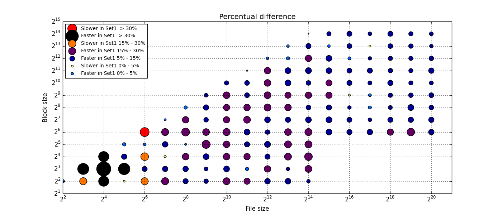

- Baseline data set
- ./gluster_baseline_tcp_1.iozone
- ./gluster_baseline_tcp_2.iozone
- ./gluster_baseline_tcp_3.iozone
- ./gluster_baseline_tcp_4.iozone
- ./gluster_baseline_tcp_5.iozone
- Investigated data set
- ./gluster_target_uds_1.iozone
- ./gluster_target_uds_2.iozone
- ./gluster_target_uds_3.iozone
- ./gluster_target_uds_4.iozone
- ./gluster_target_uds_5.iozone
Overall summary
| Operation |
Write |
Re-write |
Read |
Re-read |
Random read |
Random write |
Backwards read |
Record rewrite |
Strided Read |
Fwrite |
Frewrite |
Fread |
Freread |
ALL |
| baeline | first quartile |
289.37 |
272.44 |
360.22 |
361.17 |
134.05 |
186.96 |
117.79 |
226.65 |
262.33 |
291.71 |
293.13 |
309.23 |
307.16 |
256.54 |
| median |
791.01 |
847.5 |
484.76 |
491.46 |
317.64 |
710.2 |
338.63 |
726.22 |
501.28 |
869.93 |
875.77 |
443.18 |
450.9 |
549.91 |
| third quartile |
1156.04 |
1219.04 |
974.44 |
989.43 |
616.33 |
1163.08 |
755.11 |
1286.44 |
1079.95 |
1180.97 |
1196.66 |
811.17 |
799.11 |
1065.82 |
| minimum |
17.43 |
17.29 |
42.03 |
64.05 |
24.44 |
8.47 |
17.82 |
17.45 |
33.11 |
16.82 |
17.51 |
28.5 |
28.31 |
8.47 |
| maximum |
1459.15 |
1504.68 |
5209.99 |
5507.58 |
910.22 |
1510.81 |
1313.03 |
1531.46 |
5607.17 |
1888.59 |
2087.54 |
1354.35 |
1328.65 |
5607.17 |
| mean val. |
740.46 |
766.14 |
773.99 |
776.24 |
381.2 |
702.72 |
453.02 |
749.4 |
901.28 |
776.49 |
790.69 |
549.57 |
547.77 |
685.31 |
| standard dev. |
445.8 |
473.22 |
799.24 |
814.31 |
266.45 |
483.73 |
385.65 |
511.91 |
1088.35 |
465.8 |
481.37 |
346.72 |
344.41 |
594.0 |
| ci. min. 90% |
713.19 |
737.2 |
725.1 |
726.43 |
364.9 |
673.13 |
429.43 |
718.09 |
834.71 |
748.0 |
761.25 |
528.36 |
526.71 |
675.24 |
| ci. max. 90% |
767.72 |
795.09 |
822.88 |
826.05 |
397.5 |
732.31 |
476.61 |
780.72 |
967.85 |
804.99 |
820.14 |
570.77 |
568.84 |
695.37 |
| geom. mean |
516.37 |
522.61 |
562.68 |
567.78 |
263.55 |
429.06 |
269.18 |
480.05 |
512.55 |
544.83 |
551.31 |
433.31 |
433.67 |
455.6 |
| set1 | first quartile |
289.73 |
280.27 |
417.53 |
420.57 |
149.47 |
228.52 |
137.12 |
261.92 |
293.6 |
280.67 |
305.62 |
356.63 |
347.64 |
285.06 |
| median |
896.22 |
971.46 |
545.71 |
544.38 |
380.62 |
823.91 |
380.65 |
855.98 |
544.57 |
998.11 |
973.74 |
488.36 |
481.17 |
608.01 |
| third quartile |
1301.58 |
1365.31 |
1078.42 |
1081.12 |
714.59 |
1295.81 |
860.21 |
1443.38 |
1157.5 |
1248.6 |
1267.88 |
880.19 |
870.16 |
1163.84 |
| minimum |
15.76 |
17.58 |
53.58 |
75.22 |
29.08 |
8.98 |
19.37 |
17.6 |
36.66 |
16.84 |
16.77 |
34.87 |
33.82 |
8.98 |
| maximum |
1544.29 |
1580.6 |
5218.5 |
5089.09 |
1139.86 |
1530.35 |
1463.16 |
1788.65 |
5906.22 |
2108.03 |
2193.57 |
1476.9 |
1481.44 |
5906.22 |
| mean val. |
814.65 |
844.53 |
842.56 |
840.93 |
449.2 |
775.77 |
505.11 |
856.75 |
983.22 |
828.8 |
839.65 |
606.0 |
603.24 |
753.11 |
| standard dev. |
502.94 |
524.35 |
820.88 |
817.84 |
320.05 |
523.38 |
419.4 |
578.32 |
1163.01 |
497.78 |
510.26 |
369.7 |
371.21 |
631.82 |
| ci. min. 90% |
783.89 |
812.46 |
792.35 |
790.91 |
429.63 |
743.75 |
479.46 |
821.38 |
912.08 |
798.35 |
808.44 |
583.39 |
580.54 |
742.4 |
| ci. max. 90% |
845.41 |
876.6 |
892.77 |
890.96 |
468.78 |
807.78 |
530.76 |
892.13 |
1054.35 |
859.25 |
870.86 |
628.61 |
625.95 |
763.81 |
| geom. mean |
552.62 |
566.68 |
626.46 |
629.21 |
308.1 |
480.86 |
304.17 |
551.48 |
568.19 |
574.33 |
579.7 |
485.15 |
481.45 |
504.04 |
| linear regression slope 90% |
1.1 - 1.12 |
1.09 - 1.11 |
1.05 - 1.07 |
1.03 - 1.05 |
1.18 - 1.19 |
1.09 - 1.11 |
1.09 - 1.11 |
1.13 - 1.15 |
1.07 - 1.08 |
1.06 - 1.08 |
1.05 - 1.07 |
1.08 - 1.1 |
1.08 - 1.1 |
1.09 - 1.1 |
| ttest equality |
DIFF |
DIFF |
SAME |
SAME |
DIFF |
DIFF |
DIFF |
DIFF |
SAME |
DIFF |
DIFF |
DIFF |
DIFF |
DIFF |
| baseline set1 difference |
10.02 % |
10.23 % |
8.86 % |
8.33 % |
17.84 % |
10.39 % |
11.5 % |
14.32 % |
9.09 % |
6.74 % |
6.19 % |
10.27 % |
10.13 % |
9.89 % |
| ttest p-value |
0.003 |
0.0029 |
0.1073 |
0.1315 |
0.0 |
0.0059 |
0.0139 |
0.0002 |
0.1663 |
0.039 |
0.0604 |
0.0028 |
0.0032 |
0.0 |
Write
| Write |
File size [kB] |
4 |
8 |
16 |
32 |
64 |
128 |
256 |
512 |
1024 |
2048 |
4096 |
8192 |
16384 |
32768 |
65536 |
131072 |
262144 |
524288 |
1048576 |
|---|
| baseline | first quartile |
17.43 |
30.5 |
38.95 |
47.64 |
58.69 |
106.68 |
122.49 |
199.94 |
282.66 |
303.26 |
326.04 |
468.16 |
579.01 |
1048.67 |
1074.3 |
1018.22 |
1082.32 |
1082.85 |
1080.76 |
| median |
17.51 |
35.11 |
51.09 |
81.49 |
110.25 |
159.9 |
252.5 |
361.42 |
457.7 |
627.65 |
717.1 |
864.38 |
999.14 |
1185.27 |
1170.15 |
1164.07 |
1196.2 |
1221.18 |
1220.74 |
| third quartile |
17.68 |
59.84 |
68.07 |
135.98 |
175.49 |
287.58 |
479.92 |
588.12 |
724.05 |
825.24 |
960.93 |
1103.12 |
1186.05 |
1248.11 |
1232.07 |
1220.68 |
1265.92 |
1308.34 |
1278.24 |
| mean val. |
23.32 |
44.9 |
55.98 |
105.79 |
156.05 |
244.81 |
312.35 |
395.2 |
480.58 |
576.74 |
670.66 |
766.96 |
843.39 |
1123.28 |
1112.92 |
1117.53 |
1145.06 |
1167.39 |
1159.06 |
| standard dev. |
13.0 |
22.47 |
28.19 |
78.31 |
120.52 |
207.09 |
198.86 |
225.94 |
255.61 |
302.22 |
349.06 |
374.55 |
404.81 |
177.2 |
177.31 |
179.34 |
178.54 |
183.17 |
179.45 |
| ci. min. 90% |
10.93 |
31.88 |
43.16 |
75.51 |
114.81 |
180.57 |
255.51 |
335.0 |
416.56 |
505.08 |
591.89 |
686.15 |
759.59 |
1078.9 |
1068.51 |
1072.61 |
1100.34 |
1121.51 |
1114.11 |
| ci. max. 90% |
35.71 |
57.93 |
68.8 |
136.07 |
197.28 |
309.06 |
369.19 |
455.39 |
544.61 |
648.4 |
749.43 |
847.76 |
927.19 |
1167.67 |
1157.33 |
1162.45 |
1189.78 |
1213.27 |
1204.0 |
| geom. mean |
21.3 |
40.67 |
50.42 |
85.3 |
120.83 |
182.63 |
246.45 |
321.86 |
392.82 |
469.21 |
540.36 |
623.0 |
685.73 |
1107.51 |
1096.85 |
1102.02 |
1129.7 |
1151.49 |
1143.63 |
| minimum |
17.43 |
23.48 |
24.96 |
39.46 |
44.52 |
56.15 |
65.15 |
83.7 |
87.68 |
95.14 |
98.74 |
90.43 |
103.13 |
686.05 |
704.71 |
736.09 |
753.17 |
762.93 |
767.2 |
| maximum |
46.57 |
89.82 |
134.9 |
297.35 |
476.79 |
791.01 |
710.03 |
840.27 |
887.34 |
1127.38 |
1164.13 |
1261.83 |
1396.65 |
1361.18 |
1352.7 |
1453.24 |
1365.03 |
1459.15 |
1436.21 |
| set1 | first quartile |
16.55 |
25.34 |
38.68 |
49.69 |
81.8 |
98.76 |
140.55 |
197.0 |
270.27 |
309.28 |
346.69 |
497.5 |
541.12 |
1159.13 |
1125.51 |
1137.55 |
1225.24 |
1272.55 |
1215.65 |
| median |
17.58 |
36.36 |
48.7 |
77.76 |
113.84 |
191.44 |
304.57 |
362.26 |
525.22 |
694.59 |
832.29 |
1032.82 |
1132.74 |
1309.6 |
1293.47 |
1347.78 |
1367.79 |
1371.11 |
1384.0 |
| third quartile |
26.56 |
42.62 |
75.97 |
130.74 |
179.57 |
340.51 |
467.08 |
670.63 |
786.07 |
915.68 |
1076.72 |
1230.65 |
1314.94 |
1363.8 |
1380.47 |
1387.31 |
1404.82 |
1431.42 |
1426.32 |
| mean val. |
24.27 |
40.8 |
63.92 |
93.85 |
149.91 |
238.5 |
316.26 |
420.72 |
515.78 |
613.34 |
738.27 |
854.17 |
923.3 |
1234.89 |
1233.05 |
1252.28 |
1283.19 |
1309.83 |
1302.56 |
| standard dev. |
12.33 |
20.52 |
40.62 |
58.81 |
107.82 |
173.57 |
201.76 |
255.14 |
287.11 |
325.34 |
390.72 |
435.83 |
463.29 |
184.67 |
187.64 |
184.36 |
181.65 |
181.71 |
175.54 |
| ci. min. 90% |
12.52 |
28.9 |
45.44 |
71.11 |
113.02 |
184.65 |
258.59 |
352.75 |
443.87 |
536.2 |
650.1 |
760.15 |
827.39 |
1188.63 |
1186.05 |
1206.1 |
1237.69 |
1264.32 |
1258.59 |
| ci. max. 90% |
36.03 |
52.69 |
82.39 |
116.59 |
186.8 |
292.34 |
373.92 |
488.69 |
587.69 |
690.48 |
826.44 |
948.2 |
1019.21 |
1281.14 |
1280.05 |
1298.45 |
1328.69 |
1355.35 |
1346.52 |
| geom. mean |
22.26 |
36.92 |
54.01 |
80.09 |
123.33 |
183.32 |
253.0 |
332.72 |
413.76 |
490.23 |
579.97 |
674.75 |
728.67 |
1219.16 |
1217.35 |
1237.23 |
1268.77 |
1295.4 |
1289.22 |
| minimum |
15.76 |
21.53 |
24.22 |
36.04 |
51.74 |
57.34 |
72.57 |
79.57 |
79.65 |
88.31 |
88.62 |
95.12 |
96.29 |
792.72 |
802.44 |
818.26 |
869.38 |
848.18 |
887.32 |
| maximum |
44.91 |
85.82 |
156.48 |
274.32 |
529.79 |
680.18 |
822.54 |
889.83 |
1006.12 |
1075.76 |
1294.56 |
1344.55 |
1435.86 |
1451.05 |
1544.29 |
1476.0 |
1482.43 |
1498.19 |
1478.85 |
| ttest equality |
SAME |
SAME |
SAME |
SAME |
SAME |
SAME |
SAME |
SAME |
SAME |
SAME |
SAME |
SAME |
SAME |
DIFF |
DIFF |
DIFF |
DIFF |
DIFF |
DIFF |
| baseline set1 difference |
0.43 % |
3.55 % |
-4.68 % |
-4.58 % |
3.26 % |
19.72 % |
20.62 % |
0.23 % |
14.75 % |
10.67 % |
16.06 % |
19.49 % |
13.37 % |
10.49 % |
10.54 % |
15.78 % |
14.35 % |
12.28 % |
13.37 % |
| ttest p-value |
0.9086 |
0.6747 |
0.5394 |
0.589 |
0.8503 |
0.8986 |
0.9353 |
0.6371 |
0.5407 |
0.5613 |
0.3407 |
0.2421 |
0.297 |
0.0044 |
0.0024 |
0.0007 |
0.0005 |
0.0004 |
0.0002 |
| Write |
Block size [kB] |
4 |
8 |
16 |
32 |
64 |
128 |
256 |
512 |
1024 |
2048 |
4096 |
8192 |
16384 |
|---|
| baseline | first quartile |
45.34 |
71.78 |
133.66 |
230.23 |
454.06 |
663.53 |
763.1 |
883.09 |
1005.45 |
1130.69 |
1174.94 |
1177.79 |
1157.72 |
| median |
80.7 |
132.06 |
232.66 |
351.84 |
666.61 |
832.46 |
999.14 |
1110.65 |
1188.59 |
1213.31 |
1232.07 |
1234.75 |
1259.45 |
| third quartile |
98.74 |
182.46 |
310.95 |
484.12 |
756.05 |
940.1 |
1088.8 |
1194.92 |
1253.9 |
1254.02 |
1297.91 |
1286.3 |
1325.35 |
| mean val. |
71.27 |
127.91 |
225.24 |
364.36 |
602.24 |
796.9 |
933.19 |
1046.87 |
1123.73 |
1189.3 |
1222.57 |
1235.08 |
1251.65 |
| standard dev. |
30.88 |
57.2 |
101.68 |
147.88 |
168.66 |
167.1 |
190.31 |
183.33 |
167.25 |
111.54 |
96.14 |
86.69 |
95.04 |
| ci. min. 90% |
64.87 |
115.57 |
202.29 |
329.3 |
569.8 |
763.6 |
893.79 |
1007.32 |
1085.99 |
1162.85 |
1198.49 |
1211.98 |
1224.48 |
| ci. max. 90% |
77.66 |
140.25 |
248.18 |
399.42 |
634.68 |
830.19 |
972.59 |
1086.42 |
1161.48 |
1215.75 |
1246.65 |
1258.17 |
1278.81 |
| geom. mean |
62.76 |
112.43 |
198.73 |
332.79 |
574.31 |
777.96 |
912.03 |
1029.46 |
1110.32 |
1183.82 |
1218.59 |
1232.1 |
1248.18 |
| minimum |
17.43 |
35.05 |
67.93 |
146.64 |
243.22 |
456.38 |
535.31 |
645.12 |
740.15 |
822.75 |
884.37 |
1038.34 |
1097.23 |
| maximum |
114.84 |
221.33 |
392.79 |
604.34 |
798.86 |
1048.67 |
1185.59 |
1317.71 |
1364.1 |
1453.24 |
1364.07 |
1412.26 |
1459.15 |
| set1 | first quartile |
44.91 |
77.45 |
136.23 |
238.98 |
501.07 |
681.37 |
863.45 |
978.12 |
1108.96 |
1207.62 |
1294.56 |
1341.95 |
1355.99 |
| median |
76.29 |
132.68 |
242.96 |
342.67 |
751.71 |
929.7 |
1152.96 |
1285.15 |
1321.21 |
1309.2 |
1352.51 |
1399.63 |
1396.35 |
| third quartile |
96.3 |
175.74 |
316.21 |
517.71 |
866.25 |
1081.92 |
1239.53 |
1359.45 |
1387.99 |
1383.41 |
1394.18 |
1431.81 |
1439.69 |
| mean val. |
70.32 |
127.21 |
224.55 |
370.73 |
672.09 |
885.6 |
1061.11 |
1164.52 |
1246.39 |
1278.69 |
1337.76 |
1372.52 |
1391.55 |
| standard dev. |
29.71 |
56.51 |
93.07 |
154.75 |
214.11 |
229.79 |
229.11 |
238.98 |
177.17 |
137.27 |
81.53 |
105.95 |
69.69 |
| ci. min. 90% |
64.17 |
115.01 |
203.55 |
334.04 |
630.9 |
839.81 |
1013.68 |
1112.96 |
1206.41 |
1246.14 |
1317.34 |
1344.29 |
1371.63 |
| ci. max. 90% |
76.47 |
139.4 |
245.56 |
407.43 |
713.27 |
931.39 |
1108.54 |
1216.07 |
1286.38 |
1311.23 |
1358.19 |
1400.74 |
1411.47 |
| geom. mean |
62.06 |
111.98 |
202.58 |
335.27 |
630.06 |
852.51 |
1032.58 |
1136.82 |
1232.63 |
1270.83 |
1335.19 |
1368.17 |
1389.79 |
| minimum |
15.76 |
33.24 |
68.85 |
130.19 |
238.35 |
451.27 |
534.22 |
679.39 |
772.74 |
926.32 |
1033.09 |
1003.75 |
1183.94 |
| maximum |
110.76 |
210.32 |
366.0 |
622.79 |
909.93 |
1239.63 |
1352.5 |
1433.77 |
1442.48 |
1451.05 |
1463.27 |
1544.29 |
1486.17 |
| ttest equality |
SAME |
SAME |
SAME |
SAME |
DIFF |
DIFF |
DIFF |
DIFF |
DIFF |
DIFF |
DIFF |
DIFF |
DIFF |
| baseline set1 difference |
-5.46 % |
0.47 % |
4.43 % |
-2.61 % |
12.77 % |
11.68 % |
15.4 % |
15.71 % |
11.16 % |
7.9 % |
9.77 % |
13.35 % |
10.87 % |
| ttest p-value |
0.8592 |
0.9459 |
0.9708 |
0.8337 |
0.028 |
0.01 |
0.0007 |
0.003 |
0.0003 |
0.0005 |
0.0 |
0.0 |
0.0 |
| Regression line |
|---|
| slope | 1.10811 |
| std. error | 0.00585 |
| ci. max 90% | 1.09842 |
| ci. min. 90% | 1.1178 |
Back on top
Re-write
| Re-write |
File size [kB] |
4 |
8 |
16 |
32 |
64 |
128 |
256 |
512 |
1024 |
2048 |
4096 |
8192 |
16384 |
32768 |
65536 |
131072 |
262144 |
524288 |
1048576 |
|---|
| baseline | first quartile |
17.36 |
26.27 |
33.05 |
47.34 |
68.23 |
101.03 |
126.89 |
191.39 |
265.46 |
327.3 |
343.28 |
482.45 |
564.81 |
1073.79 |
1102.16 |
1049.26 |
1117.85 |
1079.96 |
1127.72 |
| median |
21.45 |
34.12 |
51.57 |
79.33 |
102.97 |
191.31 |
249.02 |
378.43 |
503.05 |
682.13 |
808.74 |
883.57 |
996.39 |
1179.29 |
1231.62 |
1267.05 |
1221.07 |
1281.05 |
1305.22 |
| third quartile |
45.41 |
34.78 |
67.47 |
128.97 |
147.04 |
272.21 |
490.15 |
576.74 |
726.69 |
813.68 |
989.0 |
1183.75 |
1224.66 |
1289.95 |
1295.28 |
1325.33 |
1343.75 |
1340.7 |
1364.87 |
| mean val. |
29.48 |
36.44 |
54.78 |
96.94 |
125.69 |
230.19 |
304.34 |
387.05 |
479.02 |
583.46 |
688.73 |
802.05 |
859.89 |
1155.83 |
1183.91 |
1192.43 |
1207.55 |
1216.22 |
1230.16 |
| standard dev. |
14.87 |
16.53 |
29.24 |
71.46 |
80.37 |
161.17 |
199.34 |
210.69 |
251.28 |
302.0 |
355.14 |
413.11 |
425.08 |
191.32 |
181.25 |
188.01 |
182.23 |
174.03 |
182.84 |
| ci. min. 90% |
15.31 |
26.86 |
41.48 |
69.31 |
98.19 |
180.19 |
247.37 |
330.93 |
416.08 |
511.85 |
608.59 |
712.93 |
771.89 |
1107.91 |
1138.51 |
1145.34 |
1161.9 |
1172.63 |
1184.36 |
| ci. max. 90% |
43.66 |
46.02 |
68.08 |
124.57 |
153.19 |
280.18 |
361.32 |
443.18 |
541.96 |
655.06 |
768.88 |
891.18 |
947.89 |
1203.75 |
1229.31 |
1239.52 |
1253.19 |
1259.81 |
1275.95 |
| geom. mean |
26.64 |
33.78 |
48.46 |
79.0 |
105.96 |
182.22 |
238.06 |
316.33 |
391.83 |
471.37 |
549.6 |
636.94 |
688.09 |
1138.76 |
1168.9 |
1176.6 |
1193.18 |
1202.95 |
1215.42 |
| minimum |
17.29 |
20.29 |
21.64 |
33.98 |
38.09 |
58.49 |
67.44 |
69.05 |
85.65 |
83.39 |
89.26 |
89.7 |
94.98 |
742.17 |
802.99 |
817.68 |
849.06 |
860.54 |
865.38 |
| maximum |
45.92 |
75.89 |
131.12 |
281.39 |
393.13 |
682.84 |
718.3 |
715.31 |
814.3 |
1064.3 |
1180.59 |
1445.08 |
1433.59 |
1462.98 |
1452.2 |
1462.64 |
1497.12 |
1504.68 |
1448.81 |
| set1 | first quartile |
17.68 |
25.58 |
33.7 |
53.41 |
68.16 |
112.04 |
132.96 |
205.4 |
254.19 |
310.36 |
357.06 |
462.01 |
544.15 |
1215.43 |
1126.15 |
1136.0 |
1223.81 |
1344.27 |
1312.79 |
| median |
26.56 |
31.32 |
51.73 |
81.91 |
130.17 |
187.17 |
284.03 |
384.8 |
576.39 |
701.88 |
891.66 |
1052.53 |
1151.83 |
1370.63 |
1364.98 |
1368.37 |
1412.92 |
1433.86 |
1431.3 |
| third quartile |
28.7 |
37.0 |
69.11 |
128.73 |
185.42 |
304.13 |
516.38 |
637.79 |
794.86 |
933.88 |
1117.15 |
1240.31 |
1365.31 |
1432.8 |
1424.82 |
1432.7 |
1448.54 |
1462.93 |
1452.92 |
| mean val. |
25.49 |
35.37 |
59.42 |
99.76 |
131.45 |
241.94 |
331.82 |
417.65 |
534.87 |
654.82 |
773.93 |
885.39 |
954.8 |
1301.03 |
1275.77 |
1286.62 |
1329.68 |
1363.95 |
1342.76 |
| standard dev. |
8.15 |
16.97 |
36.46 |
63.61 |
67.3 |
188.56 |
226.2 |
251.94 |
308.69 |
362.21 |
408.5 |
462.84 |
480.84 |
187.69 |
187.38 |
193.85 |
175.28 |
160.26 |
168.4 |
| ci. min. 90% |
17.72 |
25.53 |
42.84 |
75.17 |
108.42 |
183.45 |
267.17 |
350.53 |
457.55 |
568.94 |
681.74 |
785.54 |
855.26 |
1254.02 |
1228.83 |
1238.06 |
1285.78 |
1323.81 |
1300.58 |
| ci. max. 90% |
33.26 |
45.2 |
76.0 |
124.36 |
154.48 |
300.44 |
396.47 |
484.77 |
612.19 |
740.7 |
866.11 |
985.24 |
1054.34 |
1348.04 |
1322.7 |
1335.17 |
1373.58 |
1404.09 |
1384.94 |
| geom. mean |
24.46 |
32.68 |
51.2 |
85.31 |
113.36 |
187.59 |
257.35 |
331.68 |
422.32 |
516.38 |
607.63 |
690.83 |
747.71 |
1285.88 |
1261.06 |
1270.77 |
1316.83 |
1353.6 |
1330.98 |
| minimum |
17.58 |
19.53 |
22.28 |
33.64 |
38.63 |
57.31 |
65.0 |
77.47 |
87.06 |
95.21 |
98.93 |
93.51 |
89.54 |
828.95 |
857.9 |
835.27 |
861.58 |
977.28 |
940.23 |
| maximum |
36.92 |
79.0 |
164.74 |
281.39 |
255.05 |
785.09 |
827.73 |
972.79 |
1103.82 |
1208.42 |
1295.76 |
1521.2 |
1542.03 |
1528.1 |
1512.22 |
1552.49 |
1497.69 |
1580.6 |
1499.98 |
| ttest equality |
SAME |
SAME |
SAME |
SAME |
SAME |
SAME |
SAME |
SAME |
SAME |
SAME |
SAME |
SAME |
SAME |
DIFF |
DIFF |
DIFF |
DIFF |
DIFF |
DIFF |
| baseline set1 difference |
23.83 % |
-8.22 % |
0.31 % |
3.24 % |
26.42 % |
-2.17 % |
14.06 % |
1.68 % |
14.58 % |
2.9 % |
10.25 % |
19.12 % |
15.6 % |
16.22 % |
10.83 % |
8.0 % |
15.71 % |
11.93 % |
9.66 % |
| ttest p-value |
0.6125 |
0.8877 |
0.7034 |
0.8957 |
0.7848 |
0.7961 |
0.5915 |
0.5574 |
0.3491 |
0.2872 |
0.2457 |
0.3002 |
0.2354 |
0.0005 |
0.0203 |
0.0216 |
0.0017 |
0.0001 |
0.0031 |
| Re-write |
Block size [kB] |
4 |
8 |
16 |
32 |
64 |
128 |
256 |
512 |
1024 |
2048 |
4096 |
8192 |
16384 |
|---|
| baseline | first quartile |
38.63 |
69.25 |
140.96 |
231.35 |
448.23 |
676.0 |
758.22 |
905.46 |
1061.15 |
1123.85 |
1209.12 |
1298.26 |
1201.98 |
| median |
69.05 |
133.66 |
244.97 |
371.53 |
671.2 |
832.54 |
1019.09 |
1143.16 |
1241.06 |
1271.61 |
1312.86 |
1354.04 |
1353.41 |
| third quartile |
97.04 |
168.97 |
306.24 |
498.26 |
848.28 |
951.83 |
1128.85 |
1238.68 |
1291.05 |
1330.54 |
1367.17 |
1406.53 |
1382.89 |
| mean val. |
67.32 |
122.8 |
225.42 |
363.3 |
639.83 |
810.67 |
949.16 |
1060.43 |
1164.67 |
1232.05 |
1283.06 |
1347.14 |
1308.82 |
| standard dev. |
29.66 |
53.76 |
99.66 |
150.63 |
222.3 |
182.36 |
212.25 |
209.46 |
180.35 |
124.76 |
123.01 |
77.0 |
123.17 |
| ci. min. 90% |
61.18 |
111.2 |
202.93 |
327.58 |
597.07 |
774.33 |
905.22 |
1015.24 |
1123.98 |
1202.47 |
1252.25 |
1326.62 |
1273.62 |
| ci. max. 90% |
73.46 |
134.4 |
247.91 |
399.01 |
682.59 |
847.01 |
993.1 |
1105.62 |
1205.37 |
1261.63 |
1313.87 |
1367.65 |
1344.03 |
| geom. mean |
59.3 |
108.71 |
199.28 |
327.69 |
590.84 |
788.47 |
922.68 |
1037.49 |
1149.19 |
1225.51 |
1277.02 |
1344.95 |
1302.88 |
| minimum |
17.29 |
34.1 |
67.37 |
128.07 |
191.65 |
418.16 |
511.3 |
571.46 |
756.98 |
904.16 |
978.29 |
1149.76 |
1005.33 |
| maximum |
108.33 |
209.75 |
400.92 |
591.03 |
892.52 |
1147.88 |
1219.46 |
1322.57 |
1429.85 |
1446.76 |
1485.75 |
1504.68 |
1497.12 |
| set1 | first quartile |
45.63 |
78.21 |
157.43 |
230.3 |
524.4 |
767.5 |
919.24 |
1078.86 |
1129.15 |
1198.84 |
1332.22 |
1387.4 |
1429.34 |
| median |
77.47 |
141.17 |
229.15 |
368.04 |
806.98 |
989.22 |
1200.52 |
1320.82 |
1370.56 |
1367.97 |
1426.3 |
1446.5 |
1454.76 |
| third quartile |
98.93 |
172.53 |
311.22 |
509.63 |
948.5 |
1112.86 |
1333.51 |
1417.05 |
1433.88 |
1414.73 |
1445.56 |
1468.19 |
1478.55 |
| mean val. |
70.76 |
127.47 |
226.16 |
368.54 |
710.89 |
927.13 |
1109.8 |
1229.16 |
1279.71 |
1311.77 |
1379.01 |
1416.25 |
1439.77 |
| standard dev. |
31.24 |
53.17 |
97.62 |
154.55 |
257.78 |
227.27 |
261.94 |
230.13 |
195.69 |
133.1 |
115.85 |
95.69 |
78.22 |
| ci. min. 90% |
64.29 |
116.0 |
204.13 |
331.9 |
661.31 |
881.84 |
1055.57 |
1179.52 |
1235.54 |
1280.21 |
1349.99 |
1390.75 |
1417.41 |
| ci. max. 90% |
77.23 |
138.94 |
248.19 |
405.19 |
760.47 |
972.42 |
1164.02 |
1278.81 |
1323.87 |
1343.33 |
1408.03 |
1441.74 |
1462.12 |
| geom. mean |
62.13 |
113.0 |
201.57 |
332.79 |
650.43 |
895.06 |
1073.85 |
1204.59 |
1263.24 |
1304.8 |
1373.87 |
1412.8 |
1437.5 |
| minimum |
17.58 |
30.4 |
64.58 |
128.02 |
185.42 |
424.94 |
539.72 |
674.58 |
818.43 |
1013.26 |
1074.9 |
1075.84 |
1116.92 |
| maximum |
121.0 |
201.73 |
390.55 |
672.27 |
1031.49 |
1258.74 |
1467.39 |
1470.48 |
1499.98 |
1507.9 |
1528.1 |
1580.6 |
1552.49 |
| ttest equality |
SAME |
SAME |
SAME |
SAME |
DIFF |
DIFF |
DIFF |
DIFF |
DIFF |
DIFF |
DIFF |
DIFF |
DIFF |
| baseline set1 difference |
12.2 % |
5.62 % |
-6.46 % |
-0.94 % |
20.23 % |
18.82 % |
17.8 % |
15.54 % |
10.44 % |
7.58 % |
8.64 % |
6.83 % |
7.49 % |
| ttest p-value |
0.5205 |
0.6334 |
0.9688 |
0.8639 |
0.0727 |
0.0011 |
0.0002 |
0.0001 |
0.0018 |
0.0026 |
0.0003 |
0.0006 |
0.0 |
| Regression line |
|---|
| slope | 1.10365 |
| std. error | 0.00624 |
| ci. max 90% | 1.09332 |
| ci. min. 90% | 1.11398 |
Back on top
Read
| Read |
File size [kB] |
4 |
8 |
16 |
32 |
64 |
128 |
256 |
512 |
1024 |
2048 |
4096 |
8192 |
16384 |
32768 |
65536 |
131072 |
262144 |
524288 |
1048576 |
|---|
| baseline | first quartile |
65.33 |
91.22 |
162.7 |
132.18 |
243.22 |
151.04 |
213.93 |
270.56 |
307.03 |
348.99 |
383.58 |
369.8 |
385.03 |
449.36 |
491.34 |
503.56 |
492.21 |
502.6 |
506.86 |
| median |
78.09 |
122.88 |
164.74 |
305.02 |
452.9 |
207.84 |
253.05 |
296.36 |
326.38 |
397.3 |
419.68 |
430.28 |
484.76 |
801.95 |
834.39 |
874.61 |
882.2 |
908.47 |
907.28 |
| third quartile |
78.09 |
140.78 |
242.02 |
460.23 |
625.93 |
406.13 |
778.99 |
545.89 |
533.1 |
641.35 |
883.2 |
975.5 |
1040.72 |
1103.83 |
1176.41 |
1183.5 |
1207.38 |
1197.29 |
1193.8 |
| mean val. |
77.95 |
130.62 |
215.69 |
352.87 |
604.24 |
266.89 |
426.1 |
544.96 |
724.46 |
863.5 |
943.51 |
967.57 |
1024.71 |
896.69 |
866.7 |
871.39 |
872.24 |
880.29 |
879.36 |
| standard dev. |
30.74 |
53.77 |
90.66 |
247.34 |
461.34 |
142.96 |
311.88 |
505.4 |
910.27 |
1125.55 |
1219.09 |
1187.24 |
1252.28 |
510.9 |
380.59 |
353.98 |
347.54 |
345.42 |
338.61 |
| ci. min. 90% |
48.64 |
99.45 |
174.47 |
257.24 |
446.38 |
222.54 |
336.96 |
410.32 |
496.46 |
596.63 |
668.41 |
711.44 |
765.47 |
768.72 |
771.37 |
782.73 |
785.19 |
793.77 |
794.54 |
| ci. max. 90% |
107.26 |
161.79 |
256.92 |
448.51 |
762.1 |
311.24 |
515.24 |
679.6 |
952.46 |
1130.37 |
1218.62 |
1223.7 |
1283.95 |
1024.66 |
962.03 |
960.06 |
959.29 |
966.81 |
964.17 |
| geom. mean |
73.28 |
122.37 |
203.04 |
276.92 |
470.27 |
233.89 |
342.4 |
421.24 |
487.64 |
562.04 |
619.29 |
646.4 |
693.57 |
774.31 |
785.59 |
799.71 |
801.3 |
809.69 |
812.31 |
| minimum |
42.03 |
77.32 |
156.11 |
110.07 |
214.73 |
120.78 |
177.19 |
249.49 |
240.45 |
314.36 |
339.36 |
354.39 |
359.75 |
395.52 |
413.96 |
434.45 |
440.88 |
441.58 |
469.79 |
| maximum |
126.22 |
260.46 |
489.78 |
800.17 |
1516.99 |
555.5 |
1131.39 |
2173.65 |
3786.14 |
4544.69 |
4767.87 |
4744.82 |
5209.99 |
2078.61 |
1642.71 |
1486.59 |
1403.64 |
1383.71 |
1369.39 |
| set1 | first quartile |
60.06 |
97.54 |
257.93 |
201.48 |
247.12 |
175.1 |
247.11 |
298.35 |
357.79 |
400.74 |
430.05 |
432.64 |
468.12 |
508.46 |
516.2 |
550.58 |
559.5 |
587.44 |
573.72 |
| median |
75.22 |
120.37 |
290.23 |
314.17 |
303.48 |
222.17 |
279.63 |
374.43 |
410.17 |
435.87 |
473.65 |
480.84 |
510.45 |
908.73 |
925.19 |
964.4 |
980.81 |
967.66 |
985.84 |
| third quartile |
76.27 |
169.26 |
452.67 |
464.96 |
625.93 |
432.23 |
753.71 |
615.27 |
559.33 |
716.31 |
1044.05 |
1020.82 |
1189.94 |
1274.9 |
1261.41 |
1224.4 |
1299.4 |
1300.76 |
1301.56 |
| mean val. |
81.82 |
144.79 |
329.65 |
396.36 |
510.25 |
295.68 |
477.73 |
601.03 |
818.98 |
923.86 |
1041.03 |
1050.87 |
1118.84 |
994.12 |
937.5 |
917.83 |
957.19 |
963.22 |
955.86 |
| standard dev. |
36.08 |
69.73 |
118.66 |
282.82 |
377.64 |
171.85 |
358.96 |
530.75 |
971.49 |
1122.8 |
1251.38 |
1210.59 |
1250.67 |
535.49 |
427.17 |
366.97 |
378.67 |
355.82 |
354.81 |
| ci. min. 90% |
47.42 |
104.37 |
275.69 |
287.01 |
381.03 |
242.37 |
375.13 |
459.64 |
575.64 |
657.64 |
758.64 |
789.7 |
859.93 |
859.99 |
830.5 |
825.91 |
862.35 |
874.1 |
866.99 |
| ci. max. 90% |
116.22 |
185.21 |
383.62 |
505.71 |
639.47 |
348.99 |
580.32 |
742.43 |
1062.31 |
1190.07 |
1323.42 |
1312.03 |
1377.75 |
1128.25 |
1044.49 |
1009.74 |
1052.04 |
1052.35 |
1044.73 |
| geom. mean |
76.72 |
131.97 |
307.97 |
314.84 |
413.63 |
257.02 |
384.22 |
472.67 |
569.14 |
629.1 |
707.6 |
731.48 |
792.49 |
869.22 |
845.15 |
844.36 |
880.54 |
896.44 |
888.04 |
| minimum |
53.58 |
77.5 |
147.34 |
115.71 |
198.47 |
134.27 |
200.35 |
234.19 |
300.93 |
293.51 |
388.31 |
342.26 |
416.83 |
390.35 |
449.2 |
413.31 |
427.37 |
530.63 |
470.06 |
| maximum |
143.96 |
287.93 |
475.57 |
892.83 |
1491.1 |
822.02 |
1396.6 |
2325.5 |
4018.28 |
4367.23 |
5102.86 |
5000.06 |
5218.5 |
2224.07 |
1777.04 |
1571.57 |
1562.7 |
1490.82 |
1495.81 |
| ttest equality |
SAME |
SAME |
DIFF |
SAME |
SAME |
SAME |
SAME |
SAME |
SAME |
SAME |
SAME |
SAME |
SAME |
SAME |
SAME |
SAME |
SAME |
SAME |
SAME |
| baseline set1 difference |
-3.67 % |
-2.04 % |
76.17 % |
3.0 % |
-32.99 % |
6.89 % |
10.51 % |
26.34 % |
25.67 % |
9.71 % |
12.86 % |
11.75 % |
5.3 % |
13.32 % |
10.88 % |
10.27 % |
11.18 % |
6.52 % |
8.66 % |
| ttest p-value |
0.8598 |
0.6171 |
0.0063 |
0.6077 |
0.4344 |
0.4834 |
0.5228 |
0.6298 |
0.6351 |
0.7889 |
0.6797 |
0.7043 |
0.6688 |
0.3796 |
0.4087 |
0.5428 |
0.2705 |
0.265 |
0.2983 |
| Read |
Block size [kB] |
4 |
8 |
16 |
32 |
64 |
128 |
256 |
512 |
1024 |
2048 |
4096 |
8192 |
16384 |
|---|
| baseline | first quartile |
154.78 |
162.7 |
263.54 |
296.66 |
366.21 |
416.59 |
431.09 |
597.65 |
824.67 |
985.49 |
1176.41 |
1285.09 |
1357.38 |
| median |
249.76 |
253.44 |
318.07 |
356.22 |
419.68 |
461.22 |
475.56 |
651.43 |
888.51 |
1074.72 |
1195.24 |
1309.54 |
1427.55 |
| third quartile |
350.94 |
351.66 |
374.91 |
381.94 |
465.89 |
500.33 |
506.68 |
689.18 |
921.91 |
1114.9 |
1369.85 |
1468.57 |
1972.45 |
| mean val. |
258.86 |
256.85 |
334.95 |
402.22 |
451.25 |
482.95 |
512.25 |
744.24 |
1105.27 |
1384.35 |
1630.54 |
1773.28 |
2013.11 |
| standard dev. |
120.2 |
101.46 |
123.15 |
239.43 |
227.77 |
116.62 |
146.18 |
336.96 |
693.92 |
930.49 |
1082.11 |
1106.48 |
1287.61 |
| ci. min. 90% |
233.97 |
234.96 |
307.16 |
345.45 |
407.45 |
459.71 |
481.99 |
671.55 |
948.68 |
1163.73 |
1359.49 |
1478.51 |
1645.09 |
| ci. max. 90% |
283.74 |
278.74 |
362.74 |
458.99 |
495.06 |
506.19 |
542.51 |
816.94 |
1261.86 |
1604.97 |
1901.58 |
2068.04 |
2381.13 |
| geom. mean |
226.73 |
235.28 |
317.2 |
362.65 |
421.0 |
472.72 |
497.22 |
700.59 |
992.8 |
1223.62 |
1438.72 |
1578.49 |
1771.57 |
| minimum |
42.03 |
82.17 |
159.53 |
184.62 |
227.86 |
373.21 |
379.97 |
533.41 |
630.82 |
827.28 |
1039.57 |
1086.19 |
1250.96 |
| maximum |
568.88 |
457.78 |
800.17 |
1457.93 |
1516.99 |
950.83 |
1131.39 |
2173.65 |
3786.14 |
4544.69 |
4767.87 |
4744.82 |
5209.99 |
| set1 | first quartile |
177.31 |
223.3 |
272.87 |
323.0 |
419.56 |
471.07 |
481.8 |
681.2 |
909.63 |
1100.31 |
1254.76 |
1394.0 |
1464.71 |
| median |
288.95 |
303.54 |
376.4 |
411.87 |
482.58 |
514.69 |
530.02 |
714.62 |
964.4 |
1163.06 |
1304.24 |
1422.82 |
1549.48 |
| third quartile |
406.92 |
417.51 |
437.59 |
451.94 |
549.99 |
550.63 |
562.1 |
749.96 |
1044.05 |
1288.36 |
1528.06 |
1593.05 |
2116.43 |
| mean val. |
282.35 |
305.76 |
380.29 |
450.04 |
489.12 |
542.77 |
568.57 |
821.63 |
1216.77 |
1510.08 |
1740.55 |
1869.8 |
2121.81 |
| standard dev. |
127.45 |
108.39 |
149.06 |
241.61 |
140.38 |
156.36 |
154.48 |
355.52 |
738.39 |
909.76 |
1093.01 |
1133.21 |
1258.2 |
| ci. min. 90% |
255.97 |
282.37 |
346.66 |
392.75 |
462.12 |
511.61 |
536.6 |
744.93 |
1050.15 |
1294.37 |
1466.78 |
1567.91 |
1762.19 |
| ci. max. 90% |
308.73 |
329.14 |
413.93 |
507.33 |
516.12 |
573.93 |
600.55 |
898.32 |
1383.4 |
1725.78 |
2014.32 |
2171.69 |
2481.43 |
| geom. mean |
246.05 |
283.84 |
356.68 |
409.75 |
474.06 |
528.38 |
553.74 |
775.92 |
1099.71 |
1359.16 |
1552.57 |
1669.4 |
1894.45 |
| minimum |
53.58 |
111.53 |
164.33 |
179.56 |
259.3 |
372.94 |
413.31 |
490.15 |
739.37 |
988.95 |
1065.58 |
975.85 |
1252.35 |
| maximum |
480.94 |
472.03 |
892.83 |
1491.1 |
1359.63 |
1396.6 |
1329.32 |
2325.5 |
4018.28 |
4367.23 |
5102.86 |
5000.06 |
5218.5 |
| ttest equality |
SAME |
DIFF |
DIFF |
SAME |
SAME |
DIFF |
DIFF |
SAME |
SAME |
SAME |
SAME |
SAME |
SAME |
| baseline set1 difference |
15.69 % |
19.76 % |
18.34 % |
15.62 % |
14.99 % |
11.59 % |
11.45 % |
9.7 % |
8.54 % |
8.22 % |
9.12 % |
8.65 % |
8.54 % |
| ttest p-value |
0.2816 |
0.012 |
0.0849 |
0.3226 |
0.2223 |
0.0114 |
0.0347 |
0.2235 |
0.4162 |
0.4961 |
0.6325 |
0.701 |
0.722 |
| Regression line |
|---|
| slope | 1.05696 |
| std. error | 0.00511 |
| ci. max 90% | 1.04849 |
| ci. min. 90% | 1.06543 |

Back on top
Re-read
| Re-read |
File size [kB] |
4 |
8 |
16 |
32 |
64 |
128 |
256 |
512 |
1024 |
2048 |
4096 |
8192 |
16384 |
32768 |
65536 |
131072 |
262144 |
524288 |
1048576 |
|---|
| baseline | first quartile |
76.63 |
97.9 |
164.54 |
141.56 |
262.72 |
145.45 |
223.63 |
258.94 |
316.05 |
345.64 |
362.45 |
382.48 |
412.68 |
497.71 |
474.4 |
499.47 |
512.52 |
500.22 |
499.73 |
| median |
76.63 |
206.69 |
236.76 |
292.47 |
437.05 |
205.79 |
252.74 |
293.26 |
338.53 |
410.5 |
404.61 |
436.78 |
496.42 |
776.61 |
842.17 |
887.88 |
888.41 |
917.07 |
908.99 |
| third quartile |
103.17 |
270.69 |
318.03 |
345.56 |
630.45 |
394.2 |
781.03 |
600.58 |
519.17 |
645.38 |
842.31 |
955.1 |
997.95 |
1159.84 |
1169.12 |
1203.6 |
1195.53 |
1198.06 |
1200.6 |
| mean val. |
87.04 |
190.03 |
259.63 |
323.45 |
524.81 |
263.07 |
427.17 |
536.65 |
769.15 |
902.5 |
914.33 |
960.73 |
1041.54 |
905.49 |
857.28 |
873.75 |
880.17 |
878.32 |
877.88 |
| standard dev. |
21.05 |
87.97 |
120.14 |
215.69 |
348.85 |
135.91 |
310.4 |
510.13 |
1003.45 |
1228.67 |
1193.93 |
1189.21 |
1278.53 |
482.08 |
377.98 |
358.51 |
341.48 |
344.65 |
333.77 |
| ci. min. 90% |
66.97 |
139.04 |
204.99 |
240.05 |
405.45 |
220.9 |
338.45 |
400.75 |
517.81 |
611.18 |
644.9 |
704.17 |
776.86 |
784.74 |
762.61 |
783.96 |
794.63 |
792.0 |
794.28 |
| ci. max. 90% |
107.11 |
241.03 |
314.26 |
406.85 |
644.18 |
305.23 |
515.89 |
672.55 |
1020.49 |
1193.82 |
1183.76 |
1217.28 |
1306.21 |
1026.23 |
951.95 |
963.55 |
965.7 |
964.64 |
961.48 |
| geom. mean |
85.06 |
168.11 |
237.44 |
268.96 |
443.34 |
233.06 |
345.09 |
404.84 |
504.13 |
576.45 |
598.79 |
648.41 |
710.24 |
795.3 |
776.06 |
798.75 |
812.4 |
807.97 |
812.1 |
| minimum |
64.05 |
79.0 |
147.67 |
113.6 |
207.59 |
126.01 |
184.78 |
116.39 |
281.69 |
325.68 |
333.36 |
341.84 |
366.68 |
400.65 |
412.66 |
436.14 |
437.4 |
431.58 |
460.13 |
| maximum |
114.73 |
280.53 |
520.93 |
892.83 |
1525.82 |
547.96 |
1197.27 |
2074.73 |
4065.01 |
4739.85 |
4784.19 |
4796.36 |
5507.58 |
2022.76 |
1596.57 |
1481.29 |
1407.94 |
1370.13 |
1351.21 |
| set1 | first quartile |
76.27 |
175.19 |
168.08 |
174.15 |
233.26 |
170.7 |
234.03 |
296.67 |
353.63 |
405.47 |
421.9 |
432.31 |
457.49 |
510.29 |
512.85 |
567.54 |
566.1 |
587.3 |
581.4 |
| median |
76.63 |
200.26 |
283.94 |
323.8 |
521.36 |
223.87 |
288.4 |
339.49 |
404.36 |
450.66 |
468.0 |
476.39 |
524.95 |
875.51 |
765.53 |
921.08 |
995.14 |
997.28 |
955.17 |
| third quartile |
102.52 |
254.79 |
440.49 |
400.54 |
624.44 |
492.78 |
818.36 |
704.24 |
561.13 |
786.73 |
993.24 |
1028.9 |
1098.6 |
1282.82 |
1224.65 |
1295.98 |
1308.43 |
1327.93 |
1276.43 |
| mean val. |
95.18 |
196.87 |
311.13 |
378.69 |
563.26 |
311.62 |
465.95 |
603.8 |
842.41 |
997.18 |
975.54 |
1039.67 |
1078.72 |
974.41 |
915.69 |
936.01 |
962.79 |
965.64 |
960.59 |
| standard dev. |
30.25 |
74.0 |
134.32 |
256.76 |
376.87 |
172.75 |
335.61 |
538.71 |
1071.98 |
1259.27 |
1158.4 |
1196.35 |
1190.44 |
505.47 |
417.93 |
379.81 |
378.69 |
365.58 |
346.93 |
| ci. min. 90% |
66.34 |
153.98 |
250.04 |
279.41 |
434.3 |
258.03 |
370.03 |
460.28 |
573.91 |
698.6 |
714.13 |
781.57 |
832.28 |
847.8 |
811.01 |
840.88 |
867.93 |
874.08 |
873.69 |
| ci. max. 90% |
124.02 |
239.77 |
372.21 |
477.96 |
692.21 |
365.21 |
561.88 |
747.31 |
1110.91 |
1295.75 |
1236.94 |
1297.76 |
1325.16 |
1101.02 |
1020.38 |
1031.14 |
1057.64 |
1057.21 |
1047.48 |
| geom. mean |
91.88 |
180.77 |
282.41 |
310.28 |
466.71 |
269.03 |
376.62 |
470.2 |
564.6 |
657.16 |
673.2 |
725.9 |
775.39 |
858.84 |
827.07 |
859.67 |
887.6 |
895.07 |
897.04 |
| minimum |
75.22 |
77.32 |
157.99 |
118.85 |
204.83 |
129.94 |
174.1 |
229.35 |
315.27 |
348.37 |
262.33 |
399.08 |
412.51 |
458.05 |
434.95 |
442.76 |
476.76 |
483.58 |
541.08 |
| maximum |
145.24 |
290.48 |
489.78 |
917.83 |
1610.16 |
615.5 |
1167.93 |
2524.24 |
4545.16 |
4807.76 |
4755.71 |
4839.25 |
5089.09 |
2150.41 |
1789.92 |
1620.6 |
1590.93 |
1500.38 |
1456.27 |
| ttest equality |
SAME |
SAME |
SAME |
SAME |
SAME |
SAME |
SAME |
SAME |
SAME |
SAME |
SAME |
SAME |
SAME |
SAME |
SAME |
SAME |
SAME |
SAME |
SAME |
| baseline set1 difference |
0.0 % |
-3.11 % |
19.93 % |
10.71 % |
19.29 % |
8.78 % |
14.11 % |
15.77 % |
19.45 % |
9.79 % |
15.67 % |
9.07 % |
5.75 % |
12.74 % |
-9.1 % |
3.74 % |
12.01 % |
8.75 % |
5.08 % |
| ttest p-value |
0.6348 |
0.8529 |
0.2778 |
0.4659 |
0.7098 |
0.2312 |
0.6173 |
0.5687 |
0.7386 |
0.7044 |
0.7855 |
0.7176 |
0.864 |
0.5097 |
0.4886 |
0.4261 |
0.2801 |
0.2468 |
0.2522 |
| Re-read |
Block size [kB] |
4 |
8 |
16 |
32 |
64 |
128 |
256 |
512 |
1024 |
2048 |
4096 |
8192 |
16384 |
|---|
| baseline | first quartile |
153.22 |
226.27 |
236.56 |
307.24 |
367.97 |
420.31 |
432.14 |
600.09 |
825.3 |
1015.83 |
1173.0 |
1276.88 |
1348.97 |
| median |
271.25 |
283.0 |
319.69 |
347.19 |
421.25 |
453.69 |
479.83 |
640.35 |
887.88 |
1063.11 |
1202.68 |
1308.37 |
1407.94 |
| third quartile |
356.0 |
361.81 |
367.18 |
398.21 |
471.67 |
502.74 |
512.77 |
683.31 |
928.01 |
1103.97 |
1284.41 |
1504.73 |
1820.3 |
| mean val. |
262.01 |
283.55 |
331.38 |
384.81 |
433.21 |
491.99 |
509.2 |
745.64 |
1129.15 |
1414.5 |
1605.55 |
1778.73 |
2007.83 |
| standard dev. |
112.63 |
99.02 |
140.39 |
199.84 |
153.65 |
142.32 |
120.61 |
337.89 |
777.25 |
1036.1 |
1051.47 |
1123.64 |
1337.57 |
| ci. min. 90% |
238.69 |
262.18 |
299.7 |
337.43 |
403.66 |
463.63 |
484.23 |
672.74 |
953.75 |
1168.84 |
1342.18 |
1479.39 |
1625.53 |
| ci. max. 90% |
285.32 |
304.91 |
363.06 |
432.2 |
462.76 |
520.35 |
534.16 |
818.53 |
1304.54 |
1660.16 |
1868.91 |
2078.07 |
2390.13 |
| geom. mean |
233.2 |
263.98 |
308.9 |
355.33 |
417.23 |
478.28 |
497.87 |
700.67 |
1000.04 |
1233.25 |
1425.56 |
1580.54 |
1752.54 |
| minimum |
64.05 |
79.0 |
161.1 |
169.14 |
264.0 |
362.13 |
388.67 |
496.53 |
677.23 |
889.6 |
1018.59 |
1169.12 |
1192.45 |
| maximum |
520.93 |
472.14 |
892.83 |
1491.1 |
1525.82 |
1197.27 |
892.55 |
2074.73 |
4065.01 |
4739.85 |
4784.19 |
4796.36 |
5507.58 |
| set1 | first quartile |
231.08 |
201.96 |
235.12 |
317.64 |
424.33 |
475.69 |
482.3 |
663.97 |
873.46 |
1095.65 |
1263.18 |
1398.25 |
1456.78 |
| median |
347.11 |
296.91 |
359.57 |
387.55 |
480.26 |
508.79 |
534.71 |
698.47 |
940.53 |
1166.19 |
1328.29 |
1428.67 |
1541.42 |
| third quartile |
417.19 |
407.38 |
421.71 |
436.75 |
536.98 |
560.74 |
568.5 |
758.25 |
1017.55 |
1247.77 |
1418.71 |
1575.95 |
1910.8 |
| mean val. |
324.03 |
301.73 |
355.47 |
422.15 |
501.81 |
544.72 |
577.17 |
818.07 |
1235.81 |
1517.59 |
1699.25 |
1874.14 |
2062.94 |
| standard dev. |
125.8 |
119.13 |
146.47 |
188.58 |
185.88 |
138.08 |
157.21 |
354.04 |
840.94 |
1048.76 |
995.46 |
1105.19 |
1186.79 |
| ci. min. 90% |
297.99 |
276.03 |
322.42 |
377.44 |
466.06 |
517.2 |
544.63 |
741.69 |
1046.04 |
1268.93 |
1449.92 |
1579.72 |
1723.74 |
| ci. max. 90% |
350.07 |
327.43 |
388.53 |
466.87 |
537.56 |
572.23 |
609.72 |
894.45 |
1425.58 |
1766.25 |
1948.59 |
2168.56 |
2402.15 |
| geom. mean |
292.61 |
274.74 |
329.67 |
393.79 |
481.33 |
532.33 |
561.09 |
773.55 |
1092.24 |
1334.63 |
1534.84 |
1686.06 |
1854.74 |
| minimum |
75.22 |
77.32 |
157.99 |
201.35 |
288.4 |
387.76 |
434.95 |
600.87 |
762.49 |
686.63 |
952.44 |
1127.9 |
1168.73 |
| maximum |
557.98 |
489.78 |
917.83 |
1279.96 |
1610.16 |
1167.93 |
1152.53 |
2524.24 |
4545.16 |
4807.76 |
4755.71 |
4839.25 |
5089.09 |
| ttest equality |
DIFF |
SAME |
SAME |
SAME |
DIFF |
DIFF |
DIFF |
SAME |
SAME |
SAME |
SAME |
SAME |
SAME |
| baseline set1 difference |
27.97 % |
4.91 % |
12.47 % |
11.62 % |
14.01 % |
12.15 % |
11.44 % |
9.08 % |
5.93 % |
9.7 % |
10.44 % |
9.19 % |
9.48 % |
| ttest p-value |
0.0037 |
0.365 |
0.3804 |
0.339 |
0.0149 |
0.0277 |
0.0065 |
0.254 |
0.4912 |
0.6221 |
0.6653 |
0.7029 |
0.8559 |
| Regression line |
|---|
| slope | 1.04231 |
| std. error | 0.0057 |
| ci. max 90% | 1.03287 |
| ci. min. 90% | 1.05175 |
 Back on top
Back on top
Random read
| Random read |
File size [kB] |
4 |
8 |
16 |
32 |
64 |
128 |
256 |
512 |
1024 |
2048 |
4096 |
8192 |
16384 |
32768 |
65536 |
131072 |
262144 |
524288 |
1048576 |
|---|
| baseline | first quartile |
58.14 |
78.31 |
93.87 |
78.68 |
111.61 |
39.71 |
52.68 |
67.84 |
78.88 |
94.26 |
119.25 |
139.43 |
143.28 |
441.0 |
463.38 |
497.05 |
502.84 |
515.04 |
517.68 |
| median |
70.99 |
95.54 |
134.62 |
134.39 |
153.95 |
85.32 |
87.94 |
125.11 |
168.38 |
206.45 |
244.81 |
339.3 |
437.92 |
596.32 |
640.85 |
685.64 |
715.94 |
730.06 |
756.18 |
| third quartile |
74.88 |
140.08 |
168.43 |
224.02 |
434.15 |
154.21 |
303.23 |
302.34 |
365.08 |
464.7 |
533.66 |
582.63 |
595.53 |
634.27 |
715.84 |
761.17 |
806.63 |
830.39 |
830.82 |
| mean val. |
63.59 |
101.76 |
142.58 |
154.64 |
249.91 |
109.7 |
160.88 |
190.78 |
223.41 |
267.97 |
307.91 |
347.11 |
376.77 |
520.82 |
566.27 |
597.24 |
627.44 |
633.71 |
638.91 |
| standard dev. |
17.25 |
39.5 |
56.92 |
92.76 |
176.51 |
83.52 |
139.54 |
153.2 |
168.41 |
190.37 |
208.18 |
227.27 |
237.68 |
166.33 |
201.21 |
215.27 |
234.59 |
235.67 |
239.81 |
| ci. min. 90% |
47.14 |
78.86 |
116.7 |
118.78 |
189.51 |
83.79 |
120.99 |
149.96 |
181.22 |
222.83 |
260.93 |
298.08 |
327.57 |
479.16 |
515.88 |
543.32 |
568.68 |
574.68 |
578.84 |
| ci. max. 90% |
80.04 |
124.66 |
168.46 |
190.51 |
310.3 |
135.6 |
200.76 |
231.59 |
265.59 |
313.1 |
354.89 |
396.14 |
425.98 |
562.48 |
616.67 |
651.16 |
686.2 |
692.73 |
698.98 |
| geom. mean |
61.3 |
93.88 |
133.54 |
127.75 |
197.39 |
80.82 |
106.78 |
130.59 |
161.18 |
192.46 |
221.01 |
246.0 |
269.66 |
486.84 |
518.06 |
543.37 |
565.84 |
571.31 |
574.56 |
| minimum |
35.87 |
45.65 |
83.93 |
43.35 |
73.27 |
24.89 |
24.44 |
28.09 |
44.5 |
32.7 |
36.84 |
34.05 |
34.58 |
202.88 |
173.47 |
181.85 |
182.01 |
175.75 |
176.53 |
| maximum |
78.09 |
147.73 |
299.52 |
319.06 |
607.09 |
294.08 |
424.39 |
475.24 |
547.07 |
624.44 |
616.72 |
701.58 |
732.33 |
763.72 |
827.48 |
851.24 |
896.22 |
886.87 |
910.22 |
| set1 | first quartile |
52.21 |
59.69 |
139.08 |
83.59 |
122.28 |
44.49 |
59.74 |
81.31 |
95.14 |
111.77 |
141.17 |
162.29 |
174.04 |
503.14 |
541.03 |
576.63 |
591.89 |
602.93 |
618.29 |
| median |
55.02 |
68.15 |
187.89 |
151.28 |
206.93 |
89.68 |
110.56 |
156.95 |
199.72 |
247.36 |
293.95 |
393.6 |
495.2 |
712.86 |
735.09 |
792.83 |
836.36 |
875.64 |
901.02 |
| third quartile |
74.88 |
96.52 |
211.24 |
303.02 |
466.61 |
179.06 |
352.93 |
391.84 |
443.47 |
532.44 |
608.52 |
660.87 |
691.15 |
740.09 |
858.45 |
910.64 |
997.98 |
1025.17 |
1035.24 |
| mean val. |
61.25 |
78.16 |
182.35 |
188.89 |
300.01 |
119.03 |
183.86 |
222.68 |
259.08 |
308.83 |
354.86 |
403.1 |
431.25 |
606.05 |
668.94 |
705.76 |
746.02 |
771.05 |
787.17 |
| standard dev. |
14.33 |
29.21 |
68.74 |
113.86 |
213.78 |
85.03 |
151.75 |
174.26 |
192.34 |
214.89 |
234.61 |
263.37 |
267.19 |
195.12 |
244.2 |
256.99 |
284.37 |
299.2 |
308.44 |
| ci. min. 90% |
47.59 |
61.23 |
151.09 |
144.86 |
226.86 |
92.65 |
140.49 |
176.26 |
210.9 |
257.88 |
301.92 |
346.28 |
375.94 |
557.18 |
607.77 |
641.39 |
674.8 |
696.11 |
709.91 |
| ci. max. 90% |
74.91 |
95.1 |
213.61 |
232.91 |
373.16 |
145.41 |
227.23 |
269.11 |
307.26 |
359.78 |
407.8 |
459.92 |
486.56 |
654.92 |
730.1 |
770.13 |
817.25 |
845.99 |
864.43 |
| geom. mean |
59.93 |
73.7 |
169.56 |
155.93 |
230.76 |
91.66 |
124.96 |
154.33 |
187.67 |
224.8 |
258.01 |
286.25 |
311.06 |
565.92 |
610.31 |
641.64 |
671.06 |
689.75 |
702.51 |
| minimum |
46.05 |
45.97 |
80.53 |
48.0 |
73.7 |
31.34 |
29.08 |
32.41 |
50.49 |
38.29 |
40.83 |
37.33 |
39.16 |
236.76 |
216.25 |
215.1 |
210.85 |
208.75 |
213.43 |
| maximum |
78.09 |
139.55 |
300.89 |
440.13 |
734.7 |
280.25 |
472.58 |
586.81 |
585.16 |
683.29 |
717.23 |
772.27 |
805.68 |
867.97 |
1014.1 |
1003.41 |
1073.81 |
1118.76 |
1139.86 |
| ttest equality |
SAME |
SAME |
DIFF |
SAME |
SAME |
SAME |
SAME |
SAME |
SAME |
SAME |
SAME |
SAME |
SAME |
DIFF |
DIFF |
DIFF |
DIFF |
DIFF |
DIFF |
| baseline set1 difference |
-22.5 % |
-28.67 % |
39.56 % |
12.57 % |
34.42 % |
5.11 % |
25.73 % |
25.45 % |
18.61 % |
19.82 % |
20.07 % |
16.0 % |
13.08 % |
19.54 % |
14.71 % |
15.63 % |
16.82 % |
19.94 % |
19.15 % |
| ttest p-value |
0.8211 |
0.1462 |
0.0954 |
0.3036 |
0.3707 |
0.6695 |
0.5118 |
0.3872 |
0.3518 |
0.3166 |
0.2695 |
0.2149 |
0.2217 |
0.0283 |
0.0322 |
0.0326 |
0.0337 |
0.0176 |
0.0127 |
| Random read |
Block size [kB] |
4 |
8 |
16 |
32 |
64 |
128 |
256 |
512 |
1024 |
2048 |
4096 |
8192 |
16384 |
|---|
| baseline | first quartile |
34.05 |
52.15 |
80.63 |
117.98 |
176.14 |
253.88 |
394.71 |
470.48 |
546.61 |
599.72 |
643.32 |
637.14 |
711.46 |
| median |
37.23 |
60.7 |
97.57 |
132.67 |
183.72 |
281.37 |
437.16 |
518.34 |
600.65 |
672.44 |
745.04 |
762.48 |
788.56 |
| third quartile |
70.99 |
86.57 |
123.29 |
154.04 |
200.63 |
305.5 |
499.97 |
625.07 |
704.99 |
770.94 |
819.11 |
832.3 |
848.53 |
| mean val. |
51.9 |
78.85 |
112.29 |
162.08 |
205.11 |
277.01 |
440.49 |
542.78 |
624.81 |
680.26 |
730.61 |
742.51 |
773.04 |
| standard dev. |
30.48 |
40.03 |
58.0 |
87.87 |
86.02 |
33.42 |
58.38 |
74.48 |
86.75 |
93.92 |
98.03 |
94.94 |
92.09 |
| ci. min. 90% |
45.59 |
70.22 |
99.2 |
141.24 |
188.57 |
270.35 |
428.41 |
526.71 |
605.23 |
658.0 |
706.05 |
717.21 |
746.71 |
| ci. max. 90% |
58.21 |
87.49 |
125.38 |
182.91 |
221.66 |
283.67 |
452.58 |
558.85 |
644.38 |
702.53 |
755.16 |
767.8 |
799.36 |
| geom. mean |
45.62 |
71.07 |
101.99 |
147.38 |
195.14 |
274.92 |
436.64 |
537.83 |
618.96 |
673.92 |
723.95 |
736.52 |
767.36 |
| minimum |
24.44 |
36.57 |
46.36 |
85.62 |
140.37 |
200.96 |
334.32 |
432.14 |
474.16 |
503.92 |
559.43 |
611.86 |
567.98 |
| maximum |
183.67 |
188.43 |
319.06 |
507.24 |
607.09 |
346.32 |
527.75 |
685.64 |
776.92 |
851.25 |
860.27 |
896.22 |
910.22 |
| set1 | first quartile |
38.29 |
61.26 |
98.69 |
127.89 |
211.0 |
298.87 |
443.47 |
545.97 |
625.26 |
679.46 |
734.13 |
755.06 |
795.29 |
| median |
44.63 |
71.33 |
117.57 |
165.8 |
219.05 |
329.11 |
495.2 |
596.35 |
710.98 |
769.8 |
885.96 |
893.01 |
994.5 |
| third quartile |
73.7 |
90.91 |
138.35 |
188.84 |
236.23 |
361.02 |
588.28 |
734.53 |
830.58 |
928.58 |
984.25 |
1018.67 |
1069.26 |
| mean val. |
57.39 |
87.08 |
140.77 |
194.06 |
241.59 |
325.38 |
506.85 |
633.98 |
723.96 |
801.65 |
857.52 |
898.51 |
941.82 |
| standard dev. |
31.04 |
42.73 |
73.76 |
113.69 |
102.21 |
39.95 |
75.0 |
96.31 |
112.04 |
131.86 |
139.03 |
146.91 |
144.84 |
| ci. min. 90% |
50.97 |
77.87 |
124.13 |
167.1 |
221.93 |
317.42 |
491.32 |
613.2 |
698.68 |
770.39 |
822.7 |
859.38 |
900.42 |
| ci. max. 90% |
63.82 |
96.3 |
157.41 |
221.02 |
261.25 |
333.34 |
522.37 |
654.75 |
749.24 |
832.92 |
892.34 |
937.65 |
983.21 |
| geom. mean |
51.75 |
79.19 |
126.05 |
172.82 |
229.98 |
322.83 |
501.46 |
626.78 |
715.48 |
791.02 |
846.33 |
886.53 |
930.36 |
| minimum |
29.08 |
38.98 |
64.26 |
89.8 |
154.71 |
229.99 |
393.54 |
434.75 |
540.24 |
568.69 |
616.72 |
654.14 |
694.26 |
| maximum |
187.89 |
214.31 |
306.38 |
578.93 |
734.7 |
385.82 |
635.01 |
807.26 |
931.68 |
1014.83 |
1097.81 |
1139.86 |
1134.67 |
| ttest equality |
SAME |
SAME |
DIFF |
SAME |
DIFF |
DIFF |
DIFF |
DIFF |
DIFF |
DIFF |
DIFF |
DIFF |
DIFF |
| baseline set1 difference |
19.88 % |
17.51 % |
20.5 % |
24.97 % |
19.23 % |
16.97 % |
13.28 % |
15.05 % |
18.37 % |
14.48 % |
18.91 % |
17.12 % |
26.12 % |
| ttest p-value |
0.3104 |
0.2783 |
0.0264 |
0.1187 |
0.0193 |
0.0 |
0.0 |
0.0 |
0.0 |
0.0 |
0.0 |
0.0 |
0.0 |
| Regression line |
|---|
| slope | 1.1858 |
| std. error | 0.00491 |
| ci. max 90% | 1.17766 |
| ci. min. 90% | 1.19394 |
Back on top
Random write
| Random write |
File size [kB] |
4 |
8 |
16 |
32 |
64 |
128 |
256 |
512 |
1024 |
2048 |
4096 |
8192 |
16384 |
32768 |
65536 |
131072 |
262144 |
524288 |
1048576 |
|---|
| baseline | first quartile |
8.66 |
14.02 |
24.17 |
37.76 |
53.06 |
69.62 |
85.04 |
139.4 |
173.46 |
199.64 |
227.6 |
316.78 |
393.38 |
959.32 |
1089.53 |
1029.1 |
1093.78 |
1156.59 |
1140.99 |
| median |
9.37 |
16.18 |
28.62 |
53.77 |
90.59 |
132.62 |
199.36 |
298.82 |
424.27 |
576.96 |
775.51 |
818.34 |
971.76 |
1174.1 |
1227.82 |
1259.93 |
1276.86 |
1268.35 |
1281.78 |
| third quartile |
9.91 |
17.97 |
35.4 |
64.66 |
125.8 |
192.89 |
338.27 |
465.73 |
611.61 |
733.48 |
859.04 |
988.69 |
1106.81 |
1243.44 |
1300.63 |
1320.63 |
1353.12 |
1361.49 |
1368.55 |
| mean val. |
9.57 |
16.56 |
29.74 |
53.32 |
86.37 |
142.0 |
219.21 |
300.34 |
400.39 |
491.78 |
594.01 |
681.33 |
772.16 |
1093.33 |
1150.04 |
1166.09 |
1187.98 |
1202.39 |
1206.71 |
| standard dev. |
1.2 |
3.29 |
7.52 |
19.51 |
39.46 |
78.2 |
133.08 |
179.43 |
230.89 |
278.64 |
333.11 |
378.03 |
417.55 |
211.62 |
218.1 |
237.34 |
229.56 |
230.81 |
230.69 |
| ci. min. 90% |
8.43 |
14.65 |
26.32 |
45.78 |
72.86 |
117.74 |
181.17 |
252.54 |
342.56 |
425.72 |
518.84 |
599.77 |
685.72 |
1040.32 |
1095.41 |
1106.65 |
1130.48 |
1144.58 |
1148.93 |
| ci. max. 90% |
10.72 |
18.47 |
33.16 |
60.86 |
99.87 |
166.26 |
257.24 |
348.15 |
458.22 |
557.85 |
669.19 |
762.88 |
858.6 |
1146.33 |
1204.67 |
1225.54 |
1245.48 |
1260.2 |
1264.49 |
| geom. mean |
9.52 |
16.28 |
28.84 |
49.9 |
77.18 |
119.39 |
173.29 |
231.89 |
307.77 |
372.93 |
444.82 |
508.17 |
572.5 |
1069.19 |
1124.51 |
1137.03 |
1161.32 |
1175.22 |
1179.87 |
| minimum |
8.47 |
12.52 |
18.96 |
26.39 |
32.67 |
39.64 |
44.93 |
51.33 |
57.8 |
59.38 |
59.42 |
58.84 |
56.42 |
597.96 |
600.62 |
626.61 |
631.98 |
623.94 |
638.4 |
| maximum |
11.46 |
22.13 |
43.78 |
93.24 |
156.62 |
291.46 |
462.99 |
586.81 |
699.77 |
844.96 |
1016.01 |
1203.71 |
1276.54 |
1347.99 |
1401.15 |
1444.5 |
1442.99 |
1497.23 |
1510.81 |
| set1 | first quartile |
9.06 |
16.29 |
24.76 |
38.65 |
56.15 |
85.92 |
105.53 |
162.45 |
216.23 |
242.38 |
257.12 |
379.68 |
440.56 |
1191.85 |
1158.35 |
1144.67 |
1223.51 |
1304.85 |
1308.44 |
| median |
9.39 |
17.96 |
30.81 |
57.7 |
100.33 |
146.34 |
230.62 |
346.88 |
481.45 |
659.94 |
833.33 |
963.43 |
1098.82 |
1281.6 |
1346.26 |
1367.72 |
1395.98 |
1428.05 |
1429.95 |
| third quartile |
10.02 |
19.28 |
44.59 |
72.81 |
131.02 |
257.7 |
356.24 |
498.19 |
646.79 |
819.36 |
954.66 |
1102.61 |
1210.46 |
1328.23 |
1399.25 |
1398.55 |
1424.84 |
1457.77 |
1468.27 |
| mean val. |
10.12 |
18.86 |
34.75 |
56.97 |
90.94 |
166.51 |
235.71 |
332.61 |
435.12 |
558.0 |
652.09 |
776.19 |
855.48 |
1215.69 |
1249.63 |
1252.43 |
1305.67 |
1334.43 |
1335.13 |
| standard dev. |
1.74 |
4.51 |
11.37 |
19.58 |
37.49 |
92.82 |
131.14 |
189.34 |
244.46 |
310.18 |
353.98 |
421.84 |
452.11 |
190.89 |
214.54 |
219.48 |
211.15 |
212.16 |
205.85 |
| ci. min. 90% |
8.46 |
16.24 |
29.58 |
49.4 |
78.11 |
137.71 |
198.23 |
282.17 |
373.89 |
484.45 |
572.21 |
685.19 |
761.89 |
1167.88 |
1195.89 |
1197.45 |
1252.78 |
1281.29 |
1283.57 |
| ci. max. 90% |
11.78 |
21.47 |
39.92 |
64.54 |
103.77 |
195.3 |
273.19 |
383.05 |
496.35 |
631.54 |
731.97 |
867.2 |
949.08 |
1263.5 |
1303.36 |
1307.4 |
1358.55 |
1387.57 |
1386.69 |
| geom. mean |
10.01 |
18.43 |
32.99 |
53.69 |
82.66 |
139.48 |
194.14 |
266.89 |
341.73 |
430.71 |
498.03 |
586.73 |
645.77 |
1198.41 |
1227.89 |
1229.79 |
1284.81 |
1313.71 |
1316.08 |
| minimum |
8.98 |
13.68 |
20.48 |
31.57 |
38.2 |
46.68 |
56.69 |
59.25 |
63.93 |
70.31 |
67.3 |
69.9 |
70.11 |
744.97 |
695.3 |
706.39 |
685.58 |
774.42 |
796.14 |
| maximum |
13.15 |
29.05 |
53.33 |
93.57 |
139.82 |
356.22 |
469.83 |
705.45 |
805.23 |
956.53 |
1069.78 |
1298.71 |
1454.56 |
1439.3 |
1494.17 |
1465.25 |
1530.35 |
1528.59 |
1507.42 |
| ttest equality |
SAME |
SAME |
SAME |
SAME |
SAME |
SAME |
SAME |
SAME |
SAME |
SAME |
SAME |
SAME |
SAME |
DIFF |
DIFF |
DIFF |
DIFF |
DIFF |
DIFF |
| baseline set1 difference |
0.23 % |
10.97 % |
7.66 % |
7.3 % |
10.75 % |
10.35 % |
15.68 % |
16.08 % |
13.48 % |
14.38 % |
7.46 % |
17.73 % |
13.07 % |
9.16 % |
9.65 % |
8.56 % |
9.33 % |
12.59 % |
11.56 % |
| ttest p-value |
0.5804 |
0.2094 |
0.1654 |
0.5583 |
0.6764 |
0.2733 |
0.603 |
0.4364 |
0.4902 |
0.2642 |
0.3775 |
0.1971 |
0.2771 |
0.005 |
0.0317 |
0.0766 |
0.0131 |
0.0058 |
0.0065 |
| Random write |
Block size [kB] |
4 |
8 |
16 |
32 |
64 |
128 |
256 |
512 |
1024 |
2048 |
4096 |
8192 |
16384 |
|---|
| baseline | first quartile |
27.51 |
52.15 |
100.33 |
143.85 |
394.68 |
598.33 |
699.31 |
826.92 |
969.2 |
1052.1 |
1131.5 |
1200.6 |
1227.07 |
| median |
47.8 |
88.72 |
163.83 |
279.57 |
597.96 |
855.32 |
1000.74 |
1128.39 |
1209.37 |
1257.08 |
1270.66 |
1315.26 |
1305.92 |
| third quartile |
59.42 |
115.98 |
209.5 |
360.48 |
641.03 |
979.01 |
1111.05 |
1219.64 |
1285.39 |
1316.4 |
1343.3 |
1395.42 |
1382.0 |
| mean val. |
43.5 |
82.31 |
148.65 |
260.43 |
509.32 |
772.27 |
899.51 |
1017.04 |
1105.65 |
1167.86 |
1213.36 |
1263.68 |
1268.83 |
| standard dev. |
19.0 |
36.53 |
64.08 |
118.16 |
172.57 |
247.54 |
260.02 |
259.16 |
238.25 |
212.24 |
174.45 |
179.21 |
165.72 |
| ci. min. 90% |
39.56 |
74.43 |
134.2 |
232.41 |
476.12 |
722.94 |
845.68 |
961.13 |
1051.89 |
1117.54 |
1169.67 |
1215.94 |
1221.47 |
| ci. max. 90% |
47.43 |
90.19 |
163.11 |
288.44 |
542.51 |
821.6 |
953.34 |
1072.95 |
1159.42 |
1218.18 |
1257.06 |
1311.42 |
1316.2 |
| geom. mean |
37.67 |
71.48 |
130.34 |
227.45 |
467.76 |
719.4 |
851.57 |
976.99 |
1075.6 |
1146.27 |
1199.87 |
1249.43 |
1256.99 |
| minimum |
8.47 |
16.8 |
32.08 |
63.76 |
125.8 |
223.69 |
337.4 |
455.82 |
570.13 |
695.64 |
826.11 |
801.36 |
867.11 |
| maximum |
68.85 |
136.01 |
234.3 |
462.23 |
734.04 |
1134.67 |
1198.02 |
1320.25 |
1377.84 |
1442.67 |
1420.52 |
1497.23 |
1510.81 |
| set1 | first quartile |
31.66 |
54.14 |
109.74 |
177.43 |
439.59 |
640.91 |
775.17 |
911.91 |
1046.27 |
1147.27 |
1220.26 |
1243.49 |
1296.52 |
| median |
59.25 |
111.9 |
186.5 |
316.77 |
671.02 |
936.19 |
1151.91 |
1206.78 |
1323.59 |
1358.16 |
1358.06 |
1373.15 |
1415.7 |
| third quartile |
71.9 |
138.35 |
240.84 |
417.95 |
790.14 |
1100.82 |
1298.71 |
1398.73 |
1427.15 |
1420.06 |
1419.75 |
1425.86 |
1467.77 |
| mean val. |
51.84 |
97.46 |
176.17 |
296.5 |
592.48 |
864.85 |
1030.69 |
1133.44 |
1219.31 |
1257.9 |
1288.99 |
1323.5 |
1366.28 |
| standard dev. |
23.49 |
45.8 |
78.88 |
135.48 |
223.26 |
296.77 |
321.77 |
300.65 |
263.35 |
215.52 |
179.73 |
136.7 |
135.66 |
| ci. min. 90% |
46.97 |
87.58 |
158.37 |
264.38 |
549.54 |
805.71 |
964.07 |
1068.58 |
1159.88 |
1206.8 |
1243.97 |
1287.09 |
1327.51 |
| ci. max. 90% |
56.7 |
107.34 |
193.97 |
328.62 |
635.43 |
923.99 |
1097.3 |
1198.31 |
1278.74 |
1309.0 |
1334.01 |
1359.92 |
1405.06 |
| geom. mean |
44.24 |
82.59 |
153.53 |
257.14 |
532.7 |
798.68 |
965.87 |
1086.76 |
1185.82 |
1237.29 |
1275.15 |
1316.2 |
1359.28 |
| minimum |
8.98 |
17.79 |
40.06 |
65.64 |
131.02 |
268.34 |
339.68 |
496.04 |
597.33 |
789.9 |
851.77 |
1042.59 |
1037.96 |
| maximum |
83.5 |
159.46 |
295.24 |
514.83 |
871.1 |
1304.85 |
1440.43 |
1470.52 |
1499.37 |
1507.42 |
1484.43 |
1504.13 |
1530.35 |
| ttest equality |
DIFF |
DIFF |
DIFF |
SAME |
DIFF |
DIFF |
DIFF |
DIFF |
DIFF |
DIFF |
DIFF |
DIFF |
DIFF |
| baseline set1 difference |
23.95 % |
26.13 % |
13.84 % |
13.3 % |
12.22 % |
9.46 % |
15.11 % |
6.95 % |
9.45 % |
8.04 % |
6.88 % |
4.4 % |
8.41 % |
| ttest p-value |
0.0278 |
0.0474 |
0.0471 |
0.1591 |
0.0117 |
0.047 |
0.0117 |
0.0249 |
0.0194 |
0.0379 |
0.0459 |
0.0972 |
0.0089 |
| Regression line |
|---|
| slope | 1.09699 |
| std. error | 0.00603 |
| ci. max 90% | 1.087 |
| ci. min. 90% | 1.10698 |
Back on top
Backwards read
| Backwards read |
File size [kB] |
4 |
8 |
16 |
32 |
64 |
128 |
256 |
512 |
1024 |
2048 |
4096 |
8192 |
16384 |
32768 |
65536 |
131072 |
262144 |
524288 |
1048576 |
|---|
| baseline | first quartile |
36.5 |
33.04 |
46.03 |
53.06 |
79.13 |
39.49 |
45.7 |
48.49 |
76.65 |
83.86 |
88.55 |
120.52 |
138.5 |
424.17 |
439.61 |
490.37 |
473.47 |
515.01 |
508.79 |
| median |
56.73 |
63.53 |
72.35 |
138.31 |
146.71 |
74.41 |
92.7 |
117.92 |
160.95 |
200.87 |
252.19 |
334.89 |
402.5 |
736.19 |
757.07 |
775.79 |
823.74 |
812.41 |
822.62 |
| third quartile |
65.07 |
87.12 |
142.11 |
199.45 |
234.1 |
139.77 |
196.23 |
256.5 |
348.92 |
400.73 |
577.67 |
660.86 |
820.59 |
971.85 |
1034.43 |
1114.12 |
1145.34 |
1156.35 |
1157.73 |
| mean val. |
52.34 |
64.18 |
102.08 |
138.63 |
210.44 |
102.07 |
132.9 |
177.33 |
224.82 |
279.14 |
346.38 |
411.84 |
474.82 |
674.91 |
718.12 |
767.4 |
782.95 |
803.65 |
796.68 |
| standard dev. |
15.11 |
32.45 |
76.09 |
89.39 |
171.36 |
81.95 |
113.53 |
154.75 |
188.24 |
231.9 |
289.52 |
333.11 |
369.11 |
310.2 |
335.08 |
357.72 |
369.18 |
374.03 |
372.5 |
| ci. min. 90% |
37.93 |
45.37 |
67.48 |
104.07 |
151.81 |
76.65 |
100.45 |
136.1 |
177.67 |
224.16 |
281.04 |
339.98 |
398.41 |
597.21 |
634.19 |
677.8 |
690.48 |
709.97 |
703.37 |
| ci. max. 90% |
66.75 |
83.0 |
136.68 |
173.2 |
269.07 |
127.49 |
165.35 |
218.55 |
271.97 |
334.13 |
411.71 |
483.71 |
551.24 |
752.6 |
802.05 |
857.0 |
875.41 |
897.34 |
889.98 |
| geom. mean |
50.47 |
55.78 |
77.01 |
111.34 |
159.7 |
72.71 |
91.32 |
116.07 |
146.25 |
179.57 |
215.71 |
253.64 |
292.45 |
592.7 |
628.57 |
670.54 |
682.29 |
702.33 |
694.02 |
| minimum |
36.18 |
25.06 |
23.49 |
41.68 |
59.19 |
17.82 |
19.83 |
22.59 |
23.39 |
25.04 |
24.18 |
25.17 |
25.99 |
214.34 |
212.78 |
225.15 |
232.93 |
243.41 |
236.12 |
| maximum |
67.2 |
118.38 |
260.26 |
315.98 |
631.97 |
280.4 |
383.98 |
524.05 |
638.52 |
793.71 |
1022.51 |
1068.96 |
1174.06 |
1162.62 |
1225.51 |
1262.31 |
1301.55 |
1312.31 |
1313.03 |
| set1 | first quartile |
64.05 |
39.78 |
49.05 |
76.07 |
89.29 |
40.45 |
48.66 |
65.15 |
87.32 |
98.94 |
115.08 |
154.87 |
173.27 |
475.88 |
507.34 |
566.39 |
533.33 |
578.85 |
610.72 |
| median |
66.12 |
55.99 |
52.1 |
136.43 |
165.72 |
84.71 |
98.97 |
148.37 |
191.93 |
242.79 |
304.11 |
383.05 |
487.85 |
811.96 |
814.02 |
850.01 |
931.57 |
973.9 |
972.0 |
| third quartile |
72.24 |
69.71 |
167.69 |
186.61 |
296.27 |
154.83 |
209.73 |
238.5 |
392.47 |
484.0 |
671.84 |
773.25 |
983.35 |
1026.2 |
1163.89 |
1171.88 |
1176.29 |
1275.82 |
1193.58 |
| mean val. |
65.68 |
60.46 |
92.77 |
136.63 |
213.64 |
113.81 |
154.5 |
198.47 |
252.87 |
322.29 |
398.66 |
463.31 |
551.27 |
756.85 |
804.65 |
835.56 |
866.5 |
880.18 |
878.38 |
| standard dev. |
10.39 |
33.12 |
65.85 |
70.5 |
172.44 |
92.28 |
133.47 |
175.44 |
207.14 |
266.0 |
315.84 |
362.41 |
418.06 |
336.82 |
370.18 |
369.97 |
382.11 |
386.67 |
369.9 |
| ci. min. 90% |
55.78 |
41.26 |
62.83 |
109.37 |
154.64 |
85.19 |
116.35 |
151.73 |
200.99 |
259.22 |
327.39 |
385.12 |
464.73 |
672.48 |
711.93 |
742.89 |
770.79 |
783.33 |
785.73 |
| ci. max. 90% |
75.58 |
79.65 |
122.72 |
163.89 |
272.65 |
142.44 |
192.64 |
245.21 |
304.76 |
385.35 |
469.93 |
541.49 |
637.82 |
841.21 |
897.37 |
928.23 |
962.21 |
977.03 |
971.03 |
| geom. mean |
64.97 |
53.08 |
73.71 |
116.11 |
160.86 |
81.22 |
105.59 |
133.16 |
168.97 |
208.21 |
255.13 |
294.78 |
344.34 |
669.14 |
709.57 |
741.73 |
766.51 |
778.41 |
784.28 |
| minimum |
49.38 |
25.11 |
23.89 |
37.43 |
54.49 |
19.37 |
23.27 |
26.85 |
27.76 |
28.29 |
27.7 |
29.24 |
29.85 |
236.25 |
251.03 |
259.31 |
260.4 |
267.25 |
275.33 |
| maximum |
76.63 |
132.23 |
200.53 |
260.16 |
657.32 |
328.13 |
467.32 |
649.51 |
695.48 |
883.03 |
1050.69 |
1215.62 |
1383.49 |
1268.29 |
1416.31 |
1431.24 |
1463.16 |
1401.86 |
1399.46 |
| ttest equality |
SAME |
SAME |
SAME |
SAME |
SAME |
SAME |
SAME |
SAME |
SAME |
SAME |
SAME |
SAME |
SAME |
SAME |
SAME |
SAME |
SAME |
SAME |
SAME |
| baseline set1 difference |
16.55 % |
-11.87 % |
-27.99 % |
-1.36 % |
12.96 % |
13.83 % |
6.77 % |
25.82 % |
19.25 % |
20.87 % |
20.59 % |
14.38 % |
21.2 % |
10.29 % |
7.52 % |
9.57 % |
13.09 % |
19.88 % |
18.16 % |
| ttest p-value |
0.1424 |
0.8021 |
0.7228 |
0.9376 |
0.9478 |
0.6042 |
0.4684 |
0.5693 |
0.5031 |
0.3895 |
0.3675 |
0.4197 |
0.2712 |
0.2332 |
0.2482 |
0.3767 |
0.2943 |
0.3426 |
0.2993 |
| Backwards read |
Block size [kB] |
4 |
8 |
16 |
32 |
64 |
128 |
256 |
512 |
1024 |
2048 |
4096 |
8192 |
16384 |
|---|
| baseline | first quartile |
24.18 |
43.09 |
74.2 |
108.0 |
173.43 |
235.85 |
363.07 |
449.17 |
598.53 |
794.15 |
932.85 |
1033.89 |
1137.53 |
| median |
26.41 |
48.31 |
84.36 |
127.42 |
214.89 |
278.62 |
414.96 |
503.24 |
719.83 |
860.98 |
1028.18 |
1122.73 |
1214.08 |
| third quartile |
41.68 |
60.54 |
104.27 |
145.36 |
239.11 |
327.22 |
486.63 |
573.15 |
795.11 |
996.78 |
1143.78 |
1210.74 |
1277.66 |
| mean val. |
34.19 |
60.7 |
100.03 |
143.28 |
222.38 |
278.58 |
422.45 |
507.16 |
700.03 |
885.94 |
1030.02 |
1124.89 |
1191.4 |
| standard dev. |
16.76 |
30.53 |
47.62 |
58.04 |
90.41 |
52.0 |
66.1 |
67.32 |
100.85 |
112.12 |
112.02 |
101.5 |
104.42 |
| ci. min. 90% |
30.72 |
54.11 |
89.28 |
129.51 |
204.99 |
268.22 |
408.77 |
492.63 |
677.27 |
859.36 |
1001.96 |
1097.85 |
1161.56 |
| ci. max. 90% |
37.65 |
67.28 |
110.77 |
157.04 |
239.77 |
288.94 |
436.13 |
521.68 |
722.79 |
912.52 |
1058.08 |
1151.92 |
1221.25 |
| geom. mean |
31.12 |
55.45 |
91.85 |
134.7 |
210.01 |
273.62 |
417.41 |
502.79 |
692.76 |
878.93 |
1023.9 |
1120.32 |
1186.68 |
| minimum |
17.82 |
33.28 |
50.77 |
78.59 |
125.09 |
186.68 |
329.85 |
398.25 |
507.88 |
706.21 |
780.79 |
905.95 |
905.36 |
| maximum |
77.63 |
160.65 |
260.26 |
325.32 |
631.97 |
369.14 |
554.03 |
643.37 |
860.69 |
1051.77 |
1199.04 |
1272.49 |
1313.03 |
| set1 | first quartile |
29.21 |
49.62 |
83.19 |
127.96 |
197.85 |
269.74 |
427.33 |
513.25 |
699.36 |
893.94 |
995.42 |
1133.19 |
1259.82 |
| median |
32.31 |
56.35 |
98.92 |
158.05 |
251.03 |
329.03 |
475.41 |
597.11 |
811.96 |
989.98 |
1085.93 |
1227.5 |
1348.58 |
| third quartile |
43.9 |
63.76 |
121.02 |
173.16 |
275.54 |
377.24 |
572.92 |
693.67 |
902.65 |
1054.92 |
1193.58 |
1305.2 |
1396.29 |
| mean val. |
39.33 |
65.57 |
107.43 |
161.08 |
251.93 |
321.58 |
486.23 |
603.28 |
808.29 |
982.94 |
1084.38 |
1197.16 |
1321.68 |
| standard dev. |
17.25 |
30.4 |
38.87 |
48.69 |
87.4 |
63.09 |
89.19 |
91.87 |
118.15 |
104.98 |
117.59 |
145.81 |
102.05 |
| ci. min. 90% |
35.76 |
59.01 |
98.66 |
149.54 |
235.12 |
309.01 |
467.76 |
583.46 |
781.63 |
958.05 |
1054.93 |
1158.32 |
1292.51 |
| ci. max. 90% |
42.9 |
72.12 |
116.2 |
172.62 |
268.74 |
334.15 |
504.69 |
623.1 |
834.95 |
1007.83 |
1113.84 |
1236.01 |
1350.85 |
| geom. mean |
36.48 |
60.85 |
101.32 |
154.71 |
240.34 |
315.09 |
477.31 |
596.37 |
799.64 |
977.3 |
1078.01 |
1185.65 |
1317.59 |
| minimum |
19.37 |
31.18 |
57.68 |
92.69 |
134.85 |
199.85 |
196.48 |
462.29 |
599.88 |
694.78 |
814.02 |
540.91 |
1007.94 |
| maximum |
91.35 |
167.1 |
209.78 |
306.31 |
657.32 |
430.46 |
626.35 |
761.1 |
991.77 |
1176.29 |
1286.41 |
1342.68 |
1463.16 |
| ttest equality |
DIFF |
SAME |
SAME |
DIFF |
DIFF |
DIFF |
DIFF |
DIFF |
DIFF |
DIFF |
DIFF |
DIFF |
DIFF |
| baseline set1 difference |
22.37 % |
16.64 % |
17.26 % |
24.04 % |
16.82 % |
18.09 % |
14.57 % |
18.65 % |
12.8 % |
14.98 % |
5.62 % |
9.33 % |
11.08 % |
| ttest p-value |
0.0871 |
0.3832 |
0.3734 |
0.0997 |
0.0437 |
0.0 |
0.0 |
0.0 |
0.0 |
0.0 |
0.0272 |
0.012 |
0.0 |
| Regression line |
|---|
| slope | 1.10234 |
| std. error | 0.00524 |
| ci. max 90% | 1.09366 |
| ci. min. 90% | 1.11102 |
Back on top
Record rewrite
| Record rewrite |
File size [kB] |
4 |
8 |
16 |
32 |
64 |
128 |
256 |
512 |
1024 |
2048 |
4096 |
8192 |
16384 |
32768 |
65536 |
131072 |
262144 |
524288 |
1048576 |
|---|
| baseline | first quartile |
17.83 |
24.55 |
28.48 |
55.06 |
64.03 |
96.26 |
121.61 |
189.28 |
262.95 |
303.33 |
191.0 |
237.94 |
240.57 |
1163.72 |
1127.08 |
1210.72 |
1207.52 |
1275.9 |
1303.45 |
| median |
18.33 |
32.55 |
45.71 |
75.82 |
116.62 |
213.14 |
257.96 |
391.55 |
606.04 |
752.96 |
826.96 |
872.3 |
1088.67 |
1296.9 |
1269.43 |
1321.59 |
1323.93 |
1344.18 |
1368.35 |
| third quartile |
18.88 |
36.01 |
65.62 |
126.35 |
168.93 |
307.44 |
465.11 |
594.46 |
760.42 |
897.96 |
1040.21 |
1155.76 |
1256.09 |
1349.02 |
1371.59 |
1397.96 |
1401.8 |
1413.35 |
1403.89 |
| mean val. |
23.29 |
36.77 |
54.18 |
99.14 |
126.84 |
234.19 |
295.13 |
411.76 |
517.48 |
630.25 |
667.67 |
727.78 |
790.88 |
1142.3 |
1146.69 |
1182.73 |
1171.62 |
1189.01 |
1199.82 |
| standard dev. |
11.56 |
17.5 |
31.93 |
66.26 |
62.51 |
161.43 |
180.75 |
239.73 |
274.33 |
332.01 |
423.47 |
471.5 |
512.87 |
334.39 |
344.55 |
346.51 |
351.22 |
360.38 |
358.92 |
| ci. min. 90% |
12.27 |
26.62 |
39.66 |
73.52 |
105.46 |
184.12 |
243.47 |
347.9 |
448.77 |
551.53 |
572.1 |
626.06 |
684.7 |
1058.55 |
1060.39 |
1095.94 |
1083.65 |
1098.74 |
1109.92 |
| ci. max. 90% |
34.31 |
46.91 |
68.7 |
124.76 |
148.23 |
284.27 |
346.8 |
475.63 |
586.19 |
708.97 |
763.23 |
829.5 |
897.05 |
1226.06 |
1232.99 |
1269.52 |
1259.59 |
1279.28 |
1289.72 |
| geom. mean |
21.63 |
33.84 |
47.59 |
82.44 |
111.71 |
186.58 |
236.9 |
329.27 |
415.74 |
493.45 |
452.93 |
471.65 |
502.66 |
1071.05 |
1072.14 |
1109.09 |
1094.82 |
1108.84 |
1120.95 |
| minimum |
17.45 |
22.07 |
25.32 |
31.28 |
48.3 |
53.15 |
65.51 |
80.66 |
80.41 |
74.54 |
38.22 |
34.83 |
30.91 |
375.35 |
382.77 |
387.11 |
378.0 |
390.58 |
394.52 |
| maximum |
43.95 |
75.71 |
150.38 |
267.05 |
236.85 |
775.8 |
710.51 |
857.8 |
900.1 |
1060.93 |
1249.25 |
1344.77 |
1461.05 |
1448.3 |
1531.46 |
1514.63 |
1503.51 |
1504.01 |
1510.12 |
| set1 | first quartile |
17.6 |
33.6 |
39.59 |
53.8 |
74.33 |
115.88 |
140.02 |
208.46 |
275.64 |
327.76 |
270.81 |
303.48 |
333.72 |
1291.05 |
1132.66 |
1407.85 |
1280.58 |
1443.38 |
1378.14 |
| median |
22.09 |
41.57 |
46.78 |
84.94 |
120.87 |
192.5 |
270.61 |
394.44 |
608.68 |
845.1 |
1005.78 |
1058.74 |
1242.81 |
1440.59 |
1410.13 |
1518.4 |
1540.24 |
1570.32 |
1571.74 |
| third quartile |
32.85 |
48.57 |
64.96 |
131.21 |
210.42 |
352.82 |
530.11 |
682.83 |
789.92 |
990.48 |
1147.45 |
1290.89 |
1419.46 |
1505.17 |
1532.2 |
1575.06 |
1639.86 |
1614.04 |
1623.25 |
| mean val. |
28.05 |
46.12 |
60.99 |
101.19 |
145.38 |
269.9 |
341.87 |
448.61 |
548.25 |
689.47 |
761.15 |
835.75 |
920.63 |
1298.22 |
1292.24 |
1368.36 |
1378.18 |
1391.5 |
1381.96 |
| standard dev. |
13.83 |
22.47 |
42.0 |
66.31 |
83.05 |
200.54 |
204.94 |
277.45 |
297.41 |
371.84 |
452.31 |
523.91 |
560.2 |
331.07 |
357.55 |
367.68 |
378.77 |
375.01 |
383.23 |
| ci. min. 90% |
14.87 |
33.09 |
41.89 |
75.56 |
116.96 |
207.69 |
283.29 |
374.7 |
473.76 |
601.3 |
659.08 |
722.73 |
804.66 |
1215.29 |
1202.68 |
1276.27 |
1283.31 |
1297.57 |
1285.97 |
| ci. max. 90% |
41.23 |
59.15 |
80.09 |
126.83 |
173.8 |
332.11 |
400.44 |
522.52 |
622.75 |
777.63 |
863.22 |
948.78 |
1036.6 |
1381.14 |
1381.79 |
1460.46 |
1473.05 |
1485.43 |
1477.95 |
| geom. mean |
25.73 |
41.83 |
53.59 |
85.38 |
124.29 |
209.72 |
272.57 |
351.16 |
435.84 |
536.01 |
541.32 |
559.38 |
611.86 |
1241.02 |
1226.74 |
1296.06 |
1306.22 |
1318.86 |
1307.04 |
| minimum |
17.6 |
21.89 |
28.67 |
37.43 |
48.95 |
65.14 |
71.0 |
82.18 |
84.93 |
78.81 |
59.89 |
40.97 |
37.61 |
518.65 |
493.75 |
462.85 |
494.87 |
490.43 |
495.44 |
| maximum |
50.13 |
90.82 |
203.02 |
276.64 |
383.36 |
801.9 |
698.21 |
1063.57 |
1089.48 |
1284.47 |
1414.51 |
1549.8 |
1582.91 |
1602.79 |
1788.65 |
1699.55 |
1735.43 |
1716.83 |
1705.53 |
| ttest equality |
SAME |
SAME |
SAME |
SAME |
SAME |
SAME |
SAME |
SAME |
SAME |
SAME |
SAME |
SAME |
SAME |
DIFF |
DIFF |
DIFF |
DIFF |
DIFF |
DIFF |
| baseline set1 difference |
20.49 % |
27.71 % |
2.36 % |
12.03 % |
3.64 % |
-9.69 % |
4.9 % |
0.74 % |
0.44 % |
12.24 % |
21.62 % |
21.37 % |
14.16 % |
11.08 % |
11.08 % |
14.89 % |
16.34 % |
16.82 % |
14.86 % |
| ttest p-value |
0.5706 |
0.3129 |
0.6211 |
0.9224 |
0.377 |
0.4505 |
0.3152 |
0.5269 |
0.6112 |
0.4029 |
0.2656 |
0.2378 |
0.1708 |
0.0288 |
0.0524 |
0.0157 |
0.0087 |
0.0106 |
0.0223 |
| Record rewrite |
Block size [kB] |
4 |
8 |
16 |
32 |
64 |
128 |
256 |
512 |
1024 |
2048 |
4096 |
8192 |
16384 |
|---|
| baseline | first quartile |
34.68 |
70.82 |
138.14 |
235.36 |
386.34 |
649.78 |
879.05 |
960.24 |
1067.74 |
1195.08 |
1203.72 |
1313.79 |
1322.98 |
| median |
48.81 |
91.45 |
171.25 |
282.14 |
417.45 |
697.53 |
1171.27 |
1226.66 |
1256.09 |
1295.73 |
1335.67 |
1352.55 |
1373.15 |
| third quartile |
77.25 |
127.61 |
223.06 |
349.29 |
499.4 |
761.69 |
1323.05 |
1328.52 |
1358.09 |
1369.44 |
1373.61 |
1407.85 |
1429.32 |
| mean val. |
53.55 |
98.92 |
182.6 |
295.74 |
442.58 |
691.75 |
1105.51 |
1122.35 |
1199.89 |
1255.24 |
1289.01 |
1339.74 |
1368.76 |
| standard dev. |
24.33 |
40.64 |
71.6 |
106.45 |
117.25 |
127.28 |
277.41 |
245.49 |
210.01 |
154.6 |
135.65 |
96.9 |
92.01 |
| ci. min. 90% |
48.52 |
90.15 |
166.44 |
270.5 |
420.03 |
666.39 |
1048.08 |
1069.39 |
1152.5 |
1218.59 |
1255.04 |
1313.93 |
1342.46 |
| ci. max. 90% |
58.59 |
107.68 |
198.75 |
320.98 |
465.13 |
717.12 |
1162.94 |
1175.31 |
1247.28 |
1291.9 |
1322.99 |
1365.56 |
1395.06 |
| geom. mean |
47.83 |
90.47 |
167.8 |
276.54 |
426.99 |
679.3 |
1065.12 |
1091.91 |
1179.32 |
1244.8 |
1281.57 |
1336.15 |
1365.67 |
| minimum |
17.45 |
33.82 |
63.52 |
129.03 |
209.08 |
411.27 |
488.21 |
591.78 |
685.93 |
804.83 |
966.89 |
1103.44 |
1148.93 |
| maximum |
101.23 |
193.72 |
330.47 |
541.14 |
730.41 |
984.25 |
1498.59 |
1418.01 |
1492.82 |
1482.3 |
1509.68 |
1514.63 |
1531.46 |
| set1 | first quartile |
41.54 |
85.44 |
164.48 |
264.37 |
492.94 |
785.75 |
921.64 |
1098.63 |
1235.05 |
1253.36 |
1368.69 |
1410.85 |
1480.76 |
| median |
59.07 |
115.64 |
219.02 |
341.05 |
536.76 |
860.07 |
1334.12 |
1357.8 |
1465.56 |
1455.7 |
1449.79 |
1509.28 |
1570.32 |
| third quartile |
80.08 |
141.56 |
262.4 |
422.74 |
609.96 |
948.58 |
1473.4 |
1537.09 |
1569.28 |
1595.76 |
1605.41 |
1635.59 |
1651.53 |
| mean val. |
59.89 |
112.39 |
206.68 |
334.97 |
534.68 |
853.53 |
1230.52 |
1293.26 |
1360.78 |
1402.09 |
1457.91 |
1504.61 |
1549.39 |
| standard dev. |
22.51 |
42.69 |
77.62 |
110.86 |
125.16 |
161.03 |
328.51 |
281.68 |
250.08 |
215.35 |
158.21 |
150.93 |
127.39 |
| ci. min. 90% |
55.23 |
103.18 |
189.17 |
308.69 |
510.6 |
821.44 |
1162.52 |
1232.49 |
1304.35 |
1351.03 |
1418.28 |
1464.4 |
1512.98 |
| ci. max. 90% |
64.55 |
121.6 |
224.2 |
361.26 |
558.75 |
885.62 |
1298.53 |
1354.03 |
1417.22 |
1453.15 |
1497.54 |
1544.82 |
1585.8 |
| geom. mean |
55.1 |
103.17 |
188.43 |
314.38 |
517.74 |
836.66 |
1180.25 |
1257.9 |
1334.88 |
1384.39 |
1449.04 |
1497.0 |
1544.03 |
| minimum |
17.6 |
34.57 |
64.33 |
138.88 |
218.49 |
412.56 |
582.6 |
650.92 |
799.25 |
935.52 |
1053.99 |
1188.57 |
1175.43 |
| maximum |
95.33 |
193.07 |
349.78 |
527.72 |
812.63 |
1169.5 |
1788.65 |
1642.66 |
1659.53 |
1658.85 |
1699.55 |
1735.43 |
1734.77 |
| ttest equality |
SAME |
DIFF |
DIFF |
DIFF |
DIFF |
DIFF |
DIFF |
DIFF |
DIFF |
DIFF |
DIFF |
DIFF |
DIFF |
| baseline set1 difference |
21.02 % |
26.44 % |
27.9 % |
20.88 % |
28.58 % |
23.3 % |
13.9 % |
10.69 % |
16.68 % |
12.35 % |
8.54 % |
11.59 % |
14.36 % |
| ttest p-value |
0.1255 |
0.0793 |
0.0936 |
0.0741 |
0.0 |
0.0 |
0.0206 |
0.0006 |
0.0004 |
0.0002 |
0.0 |
0.0 |
0.0 |
| Regression line |
|---|
| slope | 1.13842 |
| std. error | 0.00636 |
| ci. max 90% | 1.12788 |
| ci. min. 90% | 1.14895 |
 Back on top
Back on top
Strided Read
| Strided Read |
File size [kB] |
4 |
8 |
16 |
32 |
64 |
128 |
256 |
512 |
1024 |
2048 |
4096 |
8192 |
16384 |
32768 |
65536 |
131072 |
262144 |
524288 |
1048576 |
|---|
| baseline | first quartile |
37.94 |
49.77 |
84.51 |
142.19 |
282.85 |
152.93 |
115.9 |
144.9 |
175.22 |
197.33 |
237.5 |
256.41 |
293.89 |
479.19 |
526.38 |
558.86 |
578.91 |
581.88 |
596.2 |
| median |
57.53 |
69.84 |
144.73 |
198.98 |
365.71 |
167.15 |
335.56 |
483.59 |
591.35 |
549.3 |
390.66 |
441.25 |
494.25 |
704.66 |
775.06 |
808.99 |
844.31 |
839.64 |
866.04 |
| third quartile |
60.06 |
74.68 |
173.48 |
245.8 |
557.98 |
192.38 |
370.68 |
617.51 |
840.41 |
1181.48 |
1559.08 |
1604.77 |
1666.81 |
2642.66 |
2886.38 |
1183.84 |
1168.25 |
1167.18 |
1169.27 |
| mean val. |
52.17 |
66.47 |
136.7 |
199.99 |
411.68 |
167.25 |
280.8 |
406.86 |
563.02 |
742.77 |
909.59 |
1075.59 |
1211.76 |
1737.23 |
1632.88 |
1502.52 |
1197.93 |
846.97 |
843.35 |
| standard dev. |
16.27 |
20.86 |
56.13 |
60.96 |
151.96 |
56.81 |
125.86 |
232.12 |
406.18 |
644.24 |
858.58 |
1141.13 |
1414.5 |
1659.75 |
1561.01 |
1569.64 |
1248.57 |
363.83 |
353.9 |
| ci. min. 90% |
36.66 |
54.38 |
111.17 |
176.42 |
359.68 |
149.62 |
244.82 |
345.02 |
461.29 |
590.02 |
715.84 |
829.41 |
918.93 |
1321.51 |
1241.88 |
1109.37 |
885.19 |
755.84 |
754.71 |
| ci. max. 90% |
67.69 |
78.57 |
162.23 |
223.56 |
463.68 |
184.87 |
316.77 |
468.7 |
664.76 |
895.52 |
1103.34 |
1321.78 |
1504.58 |
2152.96 |
2023.87 |
1895.67 |
1510.66 |
938.1 |
931.99 |
| geom. mean |
50.03 |
63.47 |
125.76 |
191.34 |
386.03 |
155.73 |
238.71 |
315.95 |
398.77 |
469.27 |
539.95 |
586.53 |
624.09 |
1084.82 |
1047.17 |
977.19 |
866.04 |
761.73 |
761.48 |
| minimum |
33.11 |
38.88 |
66.75 |
126.54 |
241.43 |
63.1 |
66.88 |
77.23 |
87.64 |
86.17 |
87.46 |
92.83 |
89.71 |
292.44 |
297.16 |
300.69 |
327.87 |
331.55 |
328.88 |
| maximum |
72.24 |
105.77 |
248.42 |
315.22 |
686.59 |
282.82 |
423.7 |
695.62 |
1285.49 |
2176.14 |
2975.84 |
3940.72 |
4900.67 |
5607.17 |
5043.71 |
5162.53 |
4847.75 |
1381.57 |
1356.51 |
| set1 | first quartile |
53.58 |
52.56 |
77.3 |
152.22 |
278.93 |
163.22 |
129.8 |
164.2 |
211.11 |
239.77 |
287.5 |
332.71 |
336.79 |
560.71 |
618.22 |
622.09 |
690.43 |
699.96 |
711.33 |
| median |
55.76 |
73.53 |
121.18 |
236.07 |
318.99 |
188.81 |
351.07 |
516.82 |
697.79 |
594.91 |
434.87 |
488.55 |
544.57 |
814.56 |
841.46 |
907.0 |
957.79 |
946.75 |
975.27 |
| third quartile |
57.53 |
89.85 |
146.75 |
285.88 |
534.11 |
214.26 |
382.59 |
665.03 |
968.26 |
1213.65 |
1668.14 |
1811.88 |
1917.13 |
2787.21 |
3075.29 |
1290.19 |
1293.96 |
1244.52 |
1269.05 |
| mean val. |
56.89 |
75.71 |
121.74 |
229.43 |
371.44 |
188.44 |
300.55 |
444.42 |
619.5 |
836.36 |
995.5 |
1189.44 |
1339.61 |
1867.53 |
1810.95 |
1586.35 |
1312.95 |
928.46 |
921.54 |
| standard dev. |
13.83 |
28.16 |
45.87 |
78.19 |
118.76 |
68.47 |
138.33 |
257.49 |
430.53 |
717.44 |
931.35 |
1227.55 |
1505.62 |
1740.14 |
1737.57 |
1580.88 |
1322.06 |
366.52 |
358.8 |
| ci. min. 90% |
43.71 |
59.38 |
100.88 |
199.2 |
330.8 |
167.2 |
261.01 |
375.82 |
511.66 |
666.26 |
785.33 |
924.61 |
1027.92 |
1431.67 |
1375.74 |
1190.39 |
981.81 |
836.65 |
831.67 |
| ci. max. 90% |
70.07 |
92.04 |
142.6 |
259.67 |
412.07 |
209.68 |
340.09 |
513.01 |
727.34 |
1006.47 |
1205.67 |
1454.27 |
1651.3 |
2303.39 |
2246.17 |
1982.32 |
1644.1 |
1020.26 |
1011.41 |
| geom. mean |
55.57 |
70.77 |
113.84 |
214.61 |
354.67 |
174.07 |
255.38 |
350.1 |
444.93 |
543.92 |
609.84 |
672.21 |
717.81 |
1204.44 |
1172.5 |
1073.7 |
968.46 |
847.18 |
841.45 |
| minimum |
39.5 |
36.66 |
70.71 |
75.64 |
242.1 |
64.8 |
71.28 |
92.83 |
96.83 |
92.72 |
109.45 |
107.88 |
112.08 |
327.16 |
349.76 |
382.65 |
369.11 |
384.23 |
379.11 |
| maximum |
78.09 |
120.56 |
205.57 |
359.29 |
562.78 |
342.49 |
582.6 |
919.08 |
1385.26 |
2397.56 |
3656.12 |
4073.22 |
5326.18 |
5906.22 |
5756.98 |
5238.64 |
5176.96 |
1507.19 |
1439.49 |
| ttest equality |
SAME |
SAME |
SAME |
SAME |
SAME |
SAME |
SAME |
SAME |
SAME |
SAME |
SAME |
SAME |
SAME |
SAME |
SAME |
SAME |
SAME |
SAME |
SAME |
| baseline set1 difference |
-3.06 % |
5.29 % |
-16.27 % |
18.64 % |
-12.78 % |
12.96 % |
4.62 % |
6.87 % |
18.0 % |
8.3 % |
11.32 % |
10.72 % |
10.18 % |
15.6 % |
8.57 % |
12.11 % |
13.44 % |
12.76 % |
12.61 % |
| ttest p-value |
0.6347 |
0.4156 |
0.4308 |
0.1921 |
0.302 |
0.1972 |
0.5341 |
0.4953 |
0.5238 |
0.4941 |
0.616 |
0.5998 |
0.6187 |
0.7171 |
0.6103 |
0.8013 |
0.6724 |
0.2927 |
0.3008 |
| Strided Read |
Block size [kB] |
4 |
8 |
16 |
32 |
64 |
128 |
256 |
512 |
1024 |
2048 |
4096 |
8192 |
16384 |
|---|
| baseline | first quartile |
72.24 |
115.53 |
173.54 |
262.34 |
375.94 |
312.41 |
480.36 |
556.07 |
803.01 |
1008.16 |
1158.45 |
1253.85 |
1333.39 |
| median |
89.81 |
131.97 |
204.33 |
285.24 |
406.03 |
332.22 |
566.51 |
602.89 |
844.31 |
1044.09 |
1183.84 |
1434.34 |
1780.84 |
| third quartile |
101.75 |
158.08 |
243.22 |
313.62 |
450.52 |
382.05 |
628.34 |
785.34 |
1559.08 |
2012.78 |
2383.82 |
2864.6 |
3550.35 |
| mean val. |
115.03 |
157.86 |
227.35 |
319.9 |
464.88 |
524.03 |
792.39 |
993.31 |
1420.58 |
1776.57 |
1944.68 |
2191.06 |
2377.6 |
| standard dev. |
94.38 |
98.78 |
83.93 |
131.36 |
230.86 |
480.66 |
641.81 |
897.17 |
1231.83 |
1410.8 |
1274.29 |
1329.46 |
1282.5 |
| ci. min. 90% |
95.5 |
136.55 |
208.41 |
288.75 |
420.47 |
428.25 |
659.53 |
799.75 |
1142.61 |
1442.07 |
1625.51 |
1836.89 |
2011.04 |
| ci. max. 90% |
134.57 |
179.17 |
246.29 |
351.04 |
509.28 |
619.81 |
925.26 |
1186.86 |
1698.56 |
2111.07 |
2263.86 |
2545.23 |
2744.16 |
| geom. mean |
95.77 |
141.12 |
215.44 |
299.43 |
424.77 |
419.28 |
659.15 |
783.5 |
1118.14 |
1426.06 |
1645.02 |
1875.5 |
2070.32 |
| minimum |
33.11 |
59.6 |
135.85 |
160.05 |
141.59 |
239.86 |
370.42 |
466.47 |
574.03 |
734.5 |
879.32 |
939.51 |
905.39 |
| maximum |
607.09 |
607.09 |
557.98 |
683.15 |
1285.49 |
2176.14 |
2975.84 |
3940.72 |
4900.67 |
5607.17 |
5043.71 |
5162.53 |
4847.75 |
| set1 | first quartile |
78.09 |
125.74 |
205.11 |
284.22 |
403.95 |
365.04 |
544.57 |
654.81 |
867.42 |
1076.8 |
1226.76 |
1343.99 |
1403.81 |
| median |
104.65 |
155.5 |
250.22 |
326.43 |
466.39 |
386.67 |
660.19 |
718.02 |
963.9 |
1146.98 |
1298.21 |
1558.53 |
2050.88 |
| third quartile |
118.44 |
176.01 |
290.8 |
351.43 |
516.62 |
429.75 |
739.4 |
966.06 |
1668.14 |
2320.32 |
2630.3 |
3136.29 |
3878.11 |
| mean val. |
122.88 |
166.43 |
262.76 |
354.99 |
504.38 |
584.25 |
894.15 |
1123.51 |
1538.52 |
1920.52 |
2128.96 |
2306.62 |
2562.49 |
| standard dev. |
86.29 |
75.35 |
97.24 |
156.2 |
239.2 |
532.78 |
694.08 |
963.25 |
1275.26 |
1519.41 |
1418.26 |
1351.39 |
1360.48 |
| ci. min. 90% |
105.02 |
150.17 |
240.82 |
317.96 |
458.37 |
478.08 |
750.47 |
915.7 |
1250.74 |
1560.27 |
1773.72 |
1946.61 |
2173.64 |
| ci. max. 90% |
140.75 |
182.68 |
284.7 |
392.03 |
550.39 |
690.42 |
1037.84 |
1331.32 |
1826.3 |
2280.78 |
2484.2 |
2666.64 |
2951.34 |
| geom. mean |
105.59 |
153.83 |
247.96 |
331.26 |
464.01 |
473.93 |
750.3 |
906.27 |
1235.87 |
1534.45 |
1790.63 |
1985.98 |
2242.38 |
| minimum |
36.66 |
69.16 |
121.18 |
161.93 |
161.28 |
280.4 |
354.51 |
492.08 |
669.72 |
720.0 |
897.04 |
960.95 |
1069.3 |
| maximum |
562.78 |
544.09 |
582.6 |
919.08 |
1385.26 |
2397.56 |
3656.12 |
4073.22 |
5326.18 |
5906.22 |
5756.98 |
5238.64 |
5176.96 |
| ttest equality |
SAME |
SAME |
DIFF |
SAME |
SAME |
SAME |
SAME |
SAME |
SAME |
SAME |
SAME |
SAME |
SAME |
| baseline set1 difference |
16.52 % |
17.82 % |
22.46 % |
14.44 % |
14.87 % |
16.39 % |
16.54 % |
19.1 % |
14.16 % |
9.85 % |
9.66 % |
8.66 % |
15.16 % |
| ttest p-value |
0.6217 |
0.5941 |
0.0433 |
0.2269 |
0.3051 |
0.4837 |
0.3871 |
0.4451 |
0.6228 |
0.6246 |
0.5184 |
0.7009 |
0.5605 |
| Regression line |
|---|
| slope | 1.07757 |
| std. error | 0.00331 |
| ci. max 90% | 1.07209 |
| ci. min. 90% | 1.08305 |
Back on top
Fwrite
| Fwrite |
File size [kB] |
4 |
8 |
16 |
32 |
64 |
128 |
256 |
512 |
1024 |
2048 |
4096 |
8192 |
16384 |
32768 |
65536 |
131072 |
262144 |
524288 |
1048576 |
|---|
| baseline | first quartile |
17.38 |
34.32 |
53.98 |
59.8 |
71.1 |
90.71 |
143.82 |
191.63 |
260.28 |
310.48 |
338.86 |
429.84 |
561.31 |
1018.36 |
1027.47 |
1025.09 |
1084.61 |
1047.62 |
1036.33 |
| median |
17.51 |
51.5 |
72.03 |
122.57 |
123.26 |
216.7 |
256.95 |
377.23 |
509.15 |
642.22 |
749.89 |
887.7 |
1004.4 |
1156.82 |
1143.18 |
1174.67 |
1203.09 |
1218.06 |
1198.33 |
| third quartile |
19.63 |
84.8 |
98.94 |
140.54 |
217.76 |
437.71 |
536.0 |
669.52 |
825.03 |
906.41 |
1070.85 |
1191.73 |
1221.48 |
1300.76 |
1237.38 |
1247.55 |
1253.52 |
1247.69 |
1258.16 |
| mean val. |
18.81 |
58.57 |
83.02 |
105.52 |
157.77 |
303.39 |
356.82 |
462.04 |
539.1 |
624.69 |
733.88 |
828.42 |
894.54 |
1189.35 |
1140.49 |
1142.18 |
1147.52 |
1153.11 |
1142.87 |
| standard dev. |
2.44 |
26.48 |
43.46 |
49.36 |
104.96 |
262.46 |
253.42 |
310.47 |
317.81 |
351.35 |
407.11 |
444.37 |
471.98 |
284.3 |
192.63 |
169.45 |
164.89 |
151.14 |
152.55 |
| ci. min. 90% |
16.49 |
43.22 |
63.26 |
86.43 |
121.85 |
221.97 |
284.38 |
379.33 |
459.49 |
541.38 |
642.01 |
732.55 |
796.84 |
1118.14 |
1092.25 |
1099.74 |
1106.22 |
1115.26 |
1104.66 |
| ci. max. 90% |
21.13 |
73.92 |
102.78 |
124.6 |
193.68 |
384.81 |
429.25 |
544.75 |
618.7 |
708.0 |
825.75 |
924.29 |
992.25 |
1260.56 |
1188.74 |
1184.62 |
1188.83 |
1190.97 |
1181.09 |
| geom. mean |
18.69 |
53.1 |
73.13 |
94.02 |
128.29 |
208.01 |
268.81 |
348.93 |
421.17 |
492.39 |
576.88 |
653.08 |
708.47 |
1158.16 |
1123.97 |
1129.08 |
1134.65 |
1142.62 |
1131.89 |
| minimum |
16.82 |
33.51 |
32.61 |
39.35 |
43.67 |
57.98 |
62.38 |
75.23 |
83.99 |
76.51 |
90.71 |
98.81 |
91.75 |
767.88 |
781.47 |
796.29 |
759.97 |
836.76 |
803.92 |
| maximum |
22.73 |
91.84 |
168.12 |
218.52 |
431.29 |
874.1 |
968.39 |
1087.28 |
1094.03 |
1253.0 |
1489.08 |
1669.14 |
1822.93 |
1888.59 |
1553.13 |
1442.71 |
1428.02 |
1392.06 |
1332.06 |
| set1 | first quartile |
17.6 |
36.24 |
46.2 |
69.45 |
89.41 |
104.05 |
140.12 |
200.8 |
263.15 |
295.97 |
339.83 |
476.12 |
559.21 |
1131.02 |
1086.79 |
1127.83 |
1149.51 |
1184.18 |
1165.36 |
| median |
30.29 |
41.55 |
67.65 |
111.42 |
118.63 |
234.38 |
271.45 |
425.17 |
551.9 |
801.51 |
948.79 |
1034.27 |
1122.17 |
1237.48 |
1188.95 |
1253.77 |
1241.95 |
1282.18 |
1232.63 |
| third quartile |
31.22 |
64.35 |
89.06 |
129.29 |
222.38 |
432.29 |
591.88 |
724.24 |
860.58 |
1014.95 |
1138.61 |
1208.73 |
1292.2 |
1342.39 |
1335.28 |
1295.02 |
1308.6 |
1328.3 |
1301.68 |
| mean val. |
28.38 |
50.57 |
76.19 |
98.53 |
155.65 |
284.54 |
397.13 |
488.45 |
594.09 |
696.17 |
797.23 |
882.6 |
957.42 |
1281.16 |
1212.26 |
1209.37 |
1208.58 |
1229.69 |
1207.27 |
| standard dev. |
11.92 |
17.51 |
36.14 |
39.53 |
81.28 |
210.73 |
316.77 |
338.04 |
378.74 |
408.08 |
448.4 |
474.16 |
495.55 |
278.66 |
211.07 |
153.02 |
138.97 |
135.78 |
124.73 |
| ci. min. 90% |
17.01 |
40.42 |
59.75 |
83.24 |
127.84 |
219.17 |
306.59 |
398.4 |
499.23 |
599.41 |
696.04 |
780.3 |
854.83 |
1211.37 |
1159.39 |
1171.04 |
1173.78 |
1195.69 |
1176.03 |
| ci. max. 90% |
39.74 |
60.72 |
92.63 |
113.81 |
183.46 |
349.92 |
487.67 |
578.51 |
688.96 |
792.92 |
898.41 |
984.89 |
1060.01 |
1350.96 |
1265.12 |
1247.7 |
1243.39 |
1263.7 |
1238.51 |
| geom. mean |
26.42 |
48.07 |
68.78 |
89.0 |
133.33 |
212.26 |
284.38 |
364.25 |
451.32 |
534.55 |
611.14 |
685.25 |
751.5 |
1253.79 |
1193.14 |
1198.84 |
1200.16 |
1221.66 |
1200.43 |
| minimum |
16.84 |
34.57 |
33.25 |
36.55 |
48.22 |
58.74 |
65.81 |
79.73 |
81.49 |
89.38 |
88.18 |
96.41 |
95.52 |
842.15 |
662.5 |
819.46 |
895.07 |
900.76 |
916.3 |
| maximum |
45.92 |
80.55 |
161.1 |
153.16 |
317.44 |
786.27 |
1202.76 |
1305.17 |
1373.47 |
1481.61 |
1732.5 |
1721.9 |
1867.41 |
2108.03 |
1614.66 |
1450.26 |
1405.2 |
1426.83 |
1377.4 |
| ttest equality |
SAME |
SAME |
SAME |
SAME |
SAME |
SAME |
SAME |
SAME |
SAME |
SAME |
SAME |
SAME |
SAME |
SAME |
DIFF |
DIFF |
DIFF |
DIFF |
DIFF |
| baseline set1 difference |
73.04 % |
-19.34 % |
-6.09 % |
-9.09 % |
-3.76 % |
8.16 % |
5.64 % |
12.71 % |
8.39 % |
24.8 % |
26.52 % |
16.51 % |
11.73 % |
6.97 % |
4.0 % |
6.73 % |
3.23 % |
5.26 % |
2.86 % |
| ttest p-value |
0.117 |
0.4358 |
0.6435 |
0.624 |
0.9367 |
0.7601 |
0.5585 |
0.7168 |
0.4575 |
0.3503 |
0.4396 |
0.5197 |
0.4602 |
0.1254 |
0.0956 |
0.0515 |
0.0608 |
0.0132 |
0.031 |
| Fwrite |
Block size [kB] |
4 |
8 |
16 |
32 |
64 |
128 |
256 |
512 |
1024 |
2048 |
4096 |
8192 |
16384 |
|---|
| baseline | first quartile |
51.36 |
87.57 |
143.85 |
257.22 |
553.15 |
750.09 |
884.91 |
1018.48 |
1129.05 |
1161.36 |
1184.11 |
1260.15 |
1274.71 |
| median |
75.23 |
138.62 |
244.0 |
383.04 |
726.65 |
862.91 |
993.2 |
1125.34 |
1187.37 |
1235.45 |
1225.18 |
1329.82 |
1323.56 |
| third quartile |
92.28 |
182.31 |
301.79 |
479.32 |
810.97 |
946.33 |
1084.61 |
1168.93 |
1229.41 |
1297.08 |
1270.6 |
1383.07 |
1417.08 |
| mean val. |
71.78 |
136.03 |
228.32 |
378.07 |
667.16 |
838.45 |
966.19 |
1081.38 |
1152.88 |
1209.83 |
1250.24 |
1346.37 |
1378.29 |
| standard dev. |
27.42 |
52.72 |
88.46 |
139.35 |
187.15 |
143.48 |
159.85 |
146.78 |
131.13 |
130.21 |
130.84 |
180.04 |
204.26 |
| ci. min. 90% |
66.1 |
124.65 |
208.36 |
345.03 |
631.16 |
809.86 |
933.1 |
1049.71 |
1123.29 |
1178.96 |
1217.47 |
1298.41 |
1319.91 |
| ci. max. 90% |
77.46 |
147.4 |
248.29 |
411.11 |
703.16 |
867.04 |
999.28 |
1113.04 |
1182.47 |
1240.71 |
1283.01 |
1394.34 |
1436.67 |
| geom. mean |
64.88 |
124.1 |
208.0 |
348.65 |
632.16 |
824.34 |
950.82 |
1069.85 |
1144.26 |
1202.43 |
1243.91 |
1335.29 |
1364.63 |
| minimum |
16.82 |
33.51 |
67.09 |
128.02 |
217.76 |
431.23 |
499.13 |
617.21 |
726.69 |
869.93 |
1012.94 |
980.61 |
1004.4 |
| maximum |
111.31 |
218.76 |
371.69 |
625.34 |
897.51 |
1130.99 |
1188.04 |
1307.66 |
1335.43 |
1489.08 |
1669.14 |
1822.93 |
1888.59 |
| set1 | first quartile |
48.22 |
94.67 |
150.8 |
264.91 |
524.31 |
857.71 |
1016.65 |
1105.74 |
1153.08 |
1190.33 |
1221.78 |
1283.85 |
1324.42 |
| median |
76.88 |
145.57 |
232.69 |
392.46 |
806.49 |
1013.28 |
1136.11 |
1188.76 |
1204.81 |
1239.89 |
1299.08 |
1324.46 |
1365.75 |
| third quartile |
96.41 |
181.19 |
307.73 |
498.08 |
896.17 |
1089.44 |
1257.21 |
1276.81 |
1254.83 |
1307.16 |
1360.55 |
1417.76 |
1534.56 |
| mean val. |
72.44 |
135.72 |
229.34 |
381.89 |
723.8 |
961.57 |
1108.17 |
1164.96 |
1182.95 |
1242.79 |
1311.75 |
1391.54 |
1454.41 |
| standard dev. |
27.04 |
47.91 |
91.2 |
144.07 |
219.58 |
198.05 |
193.92 |
160.82 |
125.31 |
153.56 |
148.07 |
165.89 |
209.8 |
| ci. min. 90% |
66.84 |
125.38 |
208.76 |
347.73 |
681.56 |
922.11 |
1068.03 |
1130.26 |
1154.68 |
1206.39 |
1274.66 |
1347.34 |
1394.44 |
| ci. max. 90% |
78.04 |
146.05 |
249.92 |
416.05 |
766.03 |
1001.04 |
1148.32 |
1199.65 |
1211.23 |
1279.2 |
1348.84 |
1435.73 |
1514.37 |
| geom. mean |
66.28 |
125.51 |
208.36 |
349.82 |
680.69 |
936.83 |
1088.81 |
1152.11 |
1175.52 |
1232.57 |
1303.76 |
1382.81 |
1441.35 |
| minimum |
16.84 |
34.57 |
64.58 |
109.24 |
216.15 |
407.43 |
580.03 |
659.73 |
771.04 |
662.5 |
1035.96 |
1210.66 |
1213.29 |
| maximum |
111.52 |
211.23 |
381.65 |
626.86 |
1041.0 |
1325.65 |
1426.83 |
1377.4 |
1481.61 |
1732.5 |
1721.9 |
1867.41 |
2108.03 |
| ttest equality |
SAME |
SAME |
SAME |
SAME |
DIFF |
DIFF |
DIFF |
DIFF |
SAME |
SAME |
DIFF |
SAME |
SAME |
| baseline set1 difference |
2.18 % |
5.02 % |
-4.64 % |
2.46 % |
10.99 % |
17.43 % |
14.39 % |
5.64 % |
1.47 % |
0.36 % |
6.03 % |
-0.4 % |
3.19 % |
| ttest p-value |
0.8905 |
0.9732 |
0.953 |
0.8933 |
0.0912 |
0.0 |
0.0 |
0.0036 |
0.2215 |
0.2498 |
0.0397 |
0.2469 |
0.1287 |
| Regression line |
|---|
| slope | 1.0676 |
| std. error | 0.00729 |
| ci. max 90% | 1.05553 |
| ci. min. 90% | 1.07967 |
Back on top
Frewrite
| Frewrite |
File size [kB] |
4 |
8 |
16 |
32 |
64 |
128 |
256 |
512 |
1024 |
2048 |
4096 |
8192 |
16384 |
32768 |
65536 |
131072 |
262144 |
524288 |
1048576 |
|---|
| baseline | first quartile |
17.51 |
34.58 |
54.71 |
58.02 |
77.84 |
109.21 |
125.02 |
198.0 |
243.49 |
318.48 |
343.45 |
488.94 |
577.16 |
1106.0 |
1054.98 |
1060.16 |
1085.35 |
1105.15 |
1048.79 |
| median |
17.83 |
35.6 |
66.82 |
122.32 |
135.63 |
219.9 |
251.77 |
406.73 |
506.08 |
673.65 |
783.88 |
903.77 |
1008.57 |
1195.06 |
1196.33 |
1191.11 |
1186.23 |
1196.66 |
1181.66 |
| third quartile |
22.45 |
49.87 |
68.68 |
135.62 |
235.78 |
445.15 |
547.11 |
693.23 |
795.46 |
889.36 |
1065.28 |
1224.11 |
1250.59 |
1308.05 |
1275.71 |
1252.2 |
1266.6 |
1242.89 |
1250.53 |
| mean val. |
23.94 |
47.93 |
73.19 |
116.75 |
168.96 |
288.21 |
384.46 |
471.53 |
547.09 |
636.46 |
749.7 |
856.95 |
920.33 |
1228.29 |
1180.56 |
1146.72 |
1157.95 |
1150.88 |
1138.26 |
| standard dev. |
11.64 |
20.66 |
38.56 |
76.07 |
109.6 |
222.69 |
309.62 |
322.75 |
334.9 |
365.12 |
433.05 |
489.25 |
499.8 |
320.84 |
203.69 |
176.99 |
157.09 |
146.43 |
146.66 |
| ci. min. 90% |
12.85 |
35.95 |
55.65 |
87.34 |
131.46 |
219.13 |
295.97 |
385.55 |
463.21 |
549.89 |
651.97 |
751.4 |
816.87 |
1147.93 |
1129.54 |
1102.39 |
1118.6 |
1114.2 |
1101.53 |
| ci. max. 90% |
35.04 |
59.91 |
90.73 |
146.16 |
206.46 |
357.3 |
472.96 |
557.51 |
630.98 |
723.03 |
847.42 |
962.5 |
1023.8 |
1308.66 |
1231.58 |
1191.05 |
1197.29 |
1187.55 |
1175.0 |
| geom. mean |
22.25 |
44.76 |
65.47 |
95.64 |
136.05 |
212.91 |
277.88 |
353.52 |
423.39 |
500.84 |
585.14 |
660.81 |
721.43 |
1190.61 |
1162.85 |
1131.66 |
1146.43 |
1140.86 |
1128.27 |
| minimum |
17.51 |
34.39 |
29.93 |
38.77 |
45.29 |
52.96 |
66.99 |
76.32 |
83.56 |
85.38 |
92.25 |
91.36 |
99.55 |
721.48 |
752.67 |
696.97 |
769.44 |
830.22 |
811.7 |
| maximum |
44.42 |
86.73 |
159.53 |
283.82 |
405.92 |
862.59 |
1275.94 |
1151.77 |
1333.3 |
1440.89 |
1719.01 |
1772.29 |
1964.67 |
2087.54 |
1665.58 |
1386.92 |
1418.13 |
1386.46 |
1342.83 |
| set1 | first quartile |
17.29 |
34.47 |
55.23 |
63.51 |
86.44 |
103.36 |
129.53 |
216.82 |
272.93 |
284.85 |
345.03 |
497.18 |
546.56 |
1160.72 |
1110.17 |
1102.97 |
1131.54 |
1157.42 |
1143.05 |
| median |
19.05 |
36.62 |
68.21 |
119.49 |
136.19 |
225.62 |
267.37 |
458.29 |
569.43 |
752.3 |
859.14 |
1032.07 |
1092.68 |
1264.97 |
1269.82 |
1257.17 |
1275.29 |
1276.53 |
1253.23 |
| third quartile |
22.7 |
44.29 |
96.8 |
129.29 |
220.14 |
482.01 |
571.82 |
668.88 |
842.43 |
1001.35 |
1146.18 |
1282.08 |
1317.65 |
1357.03 |
1341.16 |
1330.93 |
1317.22 |
1318.12 |
1301.35 |
| mean val. |
22.46 |
45.91 |
81.99 |
109.07 |
161.6 |
325.09 |
398.81 |
494.84 |
577.76 |
697.29 |
797.32 |
908.16 |
981.43 |
1317.83 |
1244.92 |
1216.97 |
1217.38 |
1223.94 |
1206.11 |
| standard dev. |
8.19 |
19.74 |
47.92 |
56.64 |
98.48 |
273.58 |
314.62 |
342.11 |
354.74 |
413.06 |
445.65 |
506.9 |
551.01 |
324.58 |
207.85 |
151.91 |
137.9 |
139.36 |
127.56 |
| ci. min. 90% |
14.66 |
34.46 |
60.19 |
87.17 |
127.9 |
240.22 |
308.89 |
403.71 |
488.91 |
599.36 |
696.76 |
798.81 |
867.36 |
1236.53 |
1192.86 |
1178.92 |
1182.84 |
1189.03 |
1174.15 |
| ci. max. 90% |
30.27 |
57.35 |
103.78 |
130.96 |
195.3 |
409.96 |
488.73 |
585.98 |
666.61 |
795.23 |
897.89 |
1017.52 |
1095.5 |
1399.13 |
1296.98 |
1255.02 |
1251.92 |
1258.84 |
1238.06 |
| geom. mean |
21.48 |
43.01 |
71.11 |
94.65 |
136.1 |
227.57 |
284.93 |
372.16 |
442.47 |
533.17 |
615.37 |
699.99 |
755.29 |
1283.09 |
1227.62 |
1207.21 |
1209.17 |
1215.26 |
1198.94 |
| minimum |
16.77 |
32.42 |
30.22 |
36.0 |
48.11 |
64.8 |
67.18 |
84.77 |
84.43 |
93.52 |
91.4 |
91.99 |
97.67 |
785.02 |
811.02 |
911.97 |
871.58 |
839.84 |
913.63 |
| maximum |
36.5 |
87.9 |
192.86 |
254.11 |
446.73 |
918.5 |
1219.55 |
1392.71 |
1243.93 |
1361.39 |
1678.59 |
1940.37 |
2170.35 |
2193.57 |
1759.65 |
1467.33 |
1424.23 |
1389.57 |
1370.68 |
| ttest equality |
SAME |
SAME |
SAME |
SAME |
SAME |
SAME |
SAME |
SAME |
SAME |
SAME |
SAME |
SAME |
SAME |
SAME |
SAME |
DIFF |
DIFF |
DIFF |
DIFF |
| baseline set1 difference |
6.86 % |
2.87 % |
2.08 % |
-2.31 % |
0.42 % |
2.6 % |
6.2 % |
12.68 % |
12.52 % |
11.67 % |
9.6 % |
14.2 % |
8.34 % |
5.85 % |
6.14 % |
5.55 % |
7.51 % |
6.67 % |
6.06 % |
| ttest p-value |
0.8219 |
0.8253 |
0.584 |
0.719 |
0.8038 |
0.5692 |
0.8481 |
0.7548 |
0.6743 |
0.4372 |
0.5709 |
0.5744 |
0.5091 |
0.1916 |
0.1415 |
0.0464 |
0.0597 |
0.0174 |
0.0215 |
| Frewrite |
Block size [kB] |
4 |
8 |
16 |
32 |
64 |
128 |
256 |
512 |
1024 |
2048 |
4096 |
8192 |
16384 |
|---|
| baseline | first quartile |
45.29 |
83.15 |
171.81 |
255.0 |
512.92 |
757.71 |
912.16 |
1018.64 |
1144.13 |
1200.51 |
1188.1 |
1251.01 |
1287.09 |
| median |
72.76 |
132.36 |
236.73 |
383.43 |
679.3 |
875.71 |
1028.65 |
1153.57 |
1191.11 |
1240.35 |
1242.89 |
1313.75 |
1336.18 |
| third quartile |
95.24 |
176.56 |
314.55 |
501.26 |
819.84 |
957.6 |
1113.08 |
1214.6 |
1235.84 |
1267.09 |
1320.55 |
1390.12 |
1476.47 |
| mean val. |
70.62 |
130.18 |
239.36 |
380.18 |
661.92 |
859.05 |
991.39 |
1093.72 |
1163.73 |
1242.82 |
1293.52 |
1363.44 |
1427.02 |
| standard dev. |
28.1 |
51.66 |
84.32 |
135.11 |
180.53 |
154.5 |
161.53 |
166.65 |
137.7 |
157.78 |
191.93 |
214.73 |
241.04 |
| ci. min. 90% |
64.8 |
119.04 |
220.33 |
348.15 |
627.19 |
828.27 |
957.95 |
1057.76 |
1132.65 |
1205.41 |
1245.45 |
1306.24 |
1358.13 |
| ci. max. 90% |
76.43 |
141.33 |
258.39 |
412.22 |
696.64 |
889.84 |
1024.83 |
1129.67 |
1194.8 |
1280.23 |
1341.6 |
1420.65 |
1495.92 |
| geom. mean |
63.77 |
118.18 |
221.88 |
353.43 |
631.99 |
843.99 |
975.64 |
1079.17 |
1154.3 |
1232.7 |
1280.81 |
1348.85 |
1409.5 |
| minimum |
17.51 |
34.39 |
66.48 |
128.65 |
213.16 |
434.08 |
508.08 |
637.66 |
723.68 |
817.06 |
983.72 |
1048.79 |
1087.32 |
| maximum |
112.61 |
216.92 |
366.17 |
616.05 |
921.57 |
1275.94 |
1189.2 |
1333.3 |
1440.89 |
1719.01 |
1772.29 |
1964.67 |
2087.54 |
| set1 | first quartile |
49.43 |
99.13 |
148.56 |
265.46 |
566.35 |
809.29 |
993.57 |
1115.44 |
1116.69 |
1175.17 |
1258.01 |
1300.79 |
1332.99 |
| median |
79.01 |
135.63 |
245.23 |
402.7 |
816.81 |
998.67 |
1160.01 |
1223.41 |
1205.54 |
1259.4 |
1297.8 |
1338.25 |
1389.57 |
| third quartile |
97.67 |
169.63 |
312.48 |
514.07 |
917.81 |
1103.77 |
1252.85 |
1289.56 |
1289.29 |
1338.91 |
1403.02 |
1400.68 |
1569.59 |
| mean val. |
74.23 |
132.16 |
231.74 |
395.8 |
744.57 |
956.86 |
1102.47 |
1176.03 |
1172.56 |
1271.51 |
1348.68 |
1431.42 |
1497.09 |
| standard dev. |
28.73 |
48.53 |
89.41 |
139.47 |
214.62 |
204.51 |
201.89 |
169.75 |
147.8 |
127.71 |
206.38 |
254.03 |
272.81 |
| ci. min. 90% |
68.29 |
121.7 |
211.56 |
362.73 |
703.29 |
916.11 |
1060.68 |
1139.41 |
1139.21 |
1241.23 |
1296.98 |
1363.75 |
1419.11 |
| ci. max. 90% |
80.18 |
142.63 |
251.91 |
428.87 |
785.85 |
997.61 |
1144.27 |
1212.65 |
1205.92 |
1301.79 |
1400.37 |
1499.1 |
1575.06 |
| geom. mean |
67.02 |
120.48 |
211.64 |
366.51 |
701.02 |
932.04 |
1080.87 |
1161.39 |
1162.37 |
1265.3 |
1334.36 |
1413.18 |
1476.08 |
| minimum |
16.77 |
32.42 |
67.09 |
114.49 |
195.95 |
424.94 |
548.19 |
657.87 |
793.65 |
913.61 |
1021.46 |
1130.47 |
1197.89 |
| maximum |
120.07 |
200.21 |
365.44 |
607.11 |
1016.8 |
1354.44 |
1424.23 |
1467.33 |
1361.39 |
1678.59 |
1940.37 |
2170.35 |
2193.57 |
| ttest equality |
SAME |
SAME |
SAME |
SAME |
DIFF |
DIFF |
DIFF |
DIFF |
SAME |
SAME |
SAME |
SAME |
SAME |
| baseline set1 difference |
8.59 % |
2.48 % |
3.59 % |
5.03 % |
20.24 % |
14.04 % |
12.77 % |
6.05 % |
1.21 % |
1.54 % |
4.42 % |
1.86 % |
4.0 % |
| ttest p-value |
0.4695 |
0.8291 |
0.6465 |
0.5708 |
0.0117 |
0.0017 |
0.0007 |
0.0084 |
0.7462 |
0.3201 |
0.1927 |
0.2 |
0.2588 |
| Regression line |
|---|
| slope | 1.06112 |
| std. error | 0.00729 |
| ci. max 90% | 1.04906 |
| ci. min. 90% | 1.07318 |
Back on top
Fread
| Fread |
File size [kB] |
4 |
8 |
16 |
32 |
64 |
128 |
256 |
512 |
1024 |
2048 |
4096 |
8192 |
16384 |
32768 |
65536 |
131072 |
262144 |
524288 |
1048576 |
|---|
| baseline | first quartile |
28.96 |
41.79 |
77.76 |
106.47 |
172.14 |
107.52 |
160.68 |
219.08 |
281.61 |
319.83 |
345.95 |
370.63 |
387.29 |
452.21 |
465.04 |
488.52 |
499.24 |
509.46 |
513.06 |
| median |
30.75 |
48.38 |
84.47 |
157.51 |
225.63 |
124.13 |
188.13 |
242.03 |
305.73 |
338.56 |
381.97 |
441.9 |
465.52 |
798.0 |
811.68 |
873.52 |
892.91 |
885.29 |
907.24 |
| third quartile |
34.58 |
55.54 |
120.67 |
196.86 |
312.52 |
174.57 |
303.27 |
362.4 |
406.51 |
506.69 |
687.82 |
783.93 |
842.69 |
999.63 |
1077.35 |
1131.38 |
1194.11 |
1190.78 |
1184.1 |
| mean val. |
31.55 |
48.63 |
96.24 |
154.43 |
250.41 |
148.97 |
230.29 |
293.54 |
356.56 |
426.97 |
498.41 |
569.77 |
615.65 |
749.98 |
791.72 |
832.92 |
853.49 |
869.74 |
873.68 |
| standard dev. |
3.06 |
9.35 |
26.72 |
54.17 |
100.82 |
59.12 |
97.12 |
101.3 |
108.07 |
156.75 |
200.36 |
251.48 |
274.47 |
278.39 |
302.96 |
316.53 |
321.44 |
324.83 |
326.33 |
| ci. min. 90% |
28.63 |
43.2 |
84.09 |
133.48 |
215.91 |
130.64 |
202.53 |
266.55 |
329.49 |
389.8 |
453.2 |
515.52 |
558.83 |
680.25 |
715.84 |
753.64 |
772.97 |
788.38 |
791.95 |
| ci. max. 90% |
34.46 |
54.05 |
108.39 |
175.37 |
284.9 |
167.31 |
258.05 |
320.53 |
383.63 |
464.14 |
543.63 |
624.02 |
672.47 |
819.71 |
867.6 |
912.2 |
934.0 |
951.1 |
955.42 |
| geom. mean |
31.43 |
47.82 |
92.85 |
144.43 |
233.17 |
139.61 |
213.84 |
279.47 |
343.05 |
404.03 |
465.27 |
522.71 |
561.57 |
696.78 |
731.53 |
769.33 |
790.42 |
806.84 |
810.15 |
| minimum |
28.5 |
36.17 |
61.49 |
74.4 |
140.2 |
91.57 |
142.05 |
204.26 |
251.58 |
293.25 |
326.21 |
335.9 |
325.68 |
385.93 |
391.49 |
399.0 |
421.45 |
447.42 |
458.14 |
| maximum |
34.95 |
64.53 |
139.5 |
242.36 |
452.9 |
296.91 |
440.24 |
547.59 |
629.7 |
810.04 |
954.62 |
1105.88 |
1175.43 |
1193.59 |
1237.12 |
1306.16 |
1297.78 |
1325.95 |
1354.35 |
| set1 | first quartile |
38.66 |
52.19 |
99.56 |
100.12 |
193.49 |
125.02 |
179.28 |
241.85 |
321.43 |
360.85 |
413.27 |
438.3 |
453.25 |
473.23 |
536.65 |
546.38 |
535.17 |
559.06 |
572.4 |
| median |
45.41 |
64.52 |
111.68 |
159.92 |
259.34 |
143.22 |
200.16 |
296.22 |
348.2 |
408.24 |
465.05 |
478.1 |
514.75 |
788.97 |
880.19 |
904.49 |
924.97 |
911.0 |
961.93 |
| third quartile |
47.11 |
79.78 |
146.03 |
197.62 |
315.91 |
195.19 |
335.15 |
406.39 |
450.62 |
561.18 |
688.7 |
883.4 |
1041.6 |
1125.46 |
1127.83 |
1264.62 |
1272.7 |
1241.28 |
1249.26 |
| mean val. |
47.72 |
64.3 |
123.9 |
166.26 |
292.22 |
167.25 |
254.39 |
338.02 |
406.08 |
489.46 |
570.86 |
658.98 |
708.39 |
826.25 |
835.26 |
885.36 |
902.74 |
925.15 |
932.1 |
| standard dev. |
14.75 |
19.47 |
32.51 |
68.85 |
127.35 |
66.3 |
119.83 |
115.18 |
124.71 |
169.35 |
216.85 |
285.15 |
307.41 |
314.89 |
321.36 |
336.07 |
354.13 |
351.76 |
335.05 |
| ci. min. 90% |
33.66 |
53.01 |
109.12 |
139.64 |
248.64 |
146.68 |
220.14 |
307.33 |
374.84 |
449.31 |
521.93 |
597.46 |
644.75 |
747.38 |
754.76 |
801.18 |
814.04 |
837.04 |
848.18 |
| ci. max. 90% |
61.78 |
75.59 |
138.69 |
192.88 |
335.8 |
187.82 |
288.64 |
368.7 |
437.32 |
529.61 |
619.8 |
720.5 |
772.03 |
905.13 |
915.75 |
969.54 |
991.44 |
1013.26 |
1016.02 |
| geom. mean |
46.15 |
61.46 |
120.26 |
153.03 |
269.15 |
156.28 |
231.76 |
321.61 |
390.79 |
465.5 |
537.48 |
606.91 |
648.96 |
765.92 |
772.69 |
820.51 |
831.5 |
856.43 |
870.43 |
| minimum |
34.87 |
36.13 |
85.8 |
79.74 |
146.71 |
93.08 |
96.18 |
220.94 |
261.92 |
335.73 |
378.28 |
399.28 |
409.69 |
460.68 |
365.53 |
422.3 |
425.24 |
436.13 |
501.9 |
| maximum |
72.56 |
91.84 |
192.86 |
315.98 |
557.98 |
320.51 |
506.12 |
657.04 |
778.34 |
949.6 |
1068.35 |
1248.82 |
1345.9 |
1350.96 |
1389.85 |
1408.08 |
1443.28 |
1459.06 |
1476.9 |
| ttest equality |
DIFF |
DIFF |
DIFF |
SAME |
SAME |
SAME |
SAME |
DIFF |
DIFF |
DIFF |
DIFF |
DIFF |
DIFF |
SAME |
SAME |
SAME |
SAME |
SAME |
SAME |
| baseline set1 difference |
47.67 % |
33.34 % |
32.21 % |
1.53 % |
14.94 % |
15.38 % |
6.39 % |
22.39 % |
13.89 % |
20.58 % |
21.75 % |
8.19 % |
10.58 % |
-1.13 % |
8.44 % |
3.55 % |
3.59 % |
2.9 % |
6.03 % |
| ttest p-value |
0.0431 |
0.034 |
0.0167 |
0.5493 |
0.2042 |
0.2645 |
0.3585 |
0.0705 |
0.0472 |
0.0584 |
0.0715 |
0.0717 |
0.072 |
0.2267 |
0.5102 |
0.4481 |
0.4915 |
0.4397 |
0.4044 |
| Fread |
Block size [kB] |
4 |
8 |
16 |
32 |
64 |
128 |
256 |
512 |
1024 |
2048 |
4096 |
8192 |
16384 |
|---|
| baseline | first quartile |
91.57 |
103.83 |
163.61 |
223.57 |
294.3 |
357.98 |
395.57 |
526.49 |
709.37 |
835.45 |
946.69 |
1090.07 |
1157.26 |
| median |
204.9 |
210.44 |
220.08 |
291.57 |
394.46 |
395.46 |
432.15 |
574.81 |
795.9 |
942.45 |
1062.54 |
1147.73 |
1260.24 |
| third quartile |
314.03 |
325.09 |
338.67 |
350.96 |
453.59 |
477.02 |
469.08 |
661.0 |
879.99 |
1049.12 |
1144.45 |
1240.78 |
1291.7 |
| mean val. |
200.14 |
214.48 |
244.96 |
280.75 |
369.9 |
403.19 |
434.5 |
585.01 |
780.13 |
935.09 |
1046.53 |
1154.57 |
1222.86 |
| standard dev. |
122.42 |
114.51 |
94.14 |
86.26 |
100.69 |
77.51 |
52.06 |
75.65 |
104.08 |
116.38 |
117.86 |
102.57 |
92.61 |
| ci. min. 90% |
174.8 |
189.78 |
223.71 |
260.3 |
350.53 |
387.75 |
423.72 |
568.69 |
756.64 |
907.5 |
1017.01 |
1127.24 |
1196.39 |
| ci. max. 90% |
225.49 |
239.19 |
266.2 |
301.2 |
389.26 |
418.64 |
445.28 |
601.33 |
803.62 |
962.68 |
1076.05 |
1181.89 |
1249.33 |
| geom. mean |
154.03 |
180.04 |
226.49 |
265.55 |
353.49 |
395.41 |
431.43 |
580.17 |
772.99 |
927.73 |
1039.89 |
1149.86 |
1219.31 |
| minimum |
28.5 |
51.06 |
114.98 |
113.14 |
162.58 |
237.15 |
339.62 |
451.06 |
572.38 |
673.43 |
811.17 |
836.51 |
998.2 |
| maximum |
438.81 |
465.52 |
410.21 |
469.25 |
507.24 |
541.81 |
546.13 |
703.33 |
928.38 |
1092.64 |
1216.03 |
1288.19 |
1354.35 |
| set1 | first quartile |
100.24 |
111.26 |
174.35 |
254.28 |
341.31 |
427.5 |
445.03 |
573.41 |
795.35 |
959.54 |
1068.35 |
1167.82 |
1261.03 |
| median |
188.35 |
225.15 |
280.43 |
326.32 |
456.06 |
458.31 |
475.02 |
646.66 |
857.45 |
1042.71 |
1131.08 |
1258.75 |
1345.9 |
| third quartile |
360.35 |
382.11 |
402.75 |
402.59 |
511.36 |
504.41 |
512.34 |
700.09 |
914.57 |
1099.09 |
1241.28 |
1337.95 |
1405.22 |
| mean val. |
231.11 |
247.52 |
286.96 |
321.68 |
421.43 |
456.73 |
477.88 |
636.81 |
848.83 |
1022.93 |
1135.5 |
1249.5 |
1310.03 |
| standard dev. |
144.13 |
134.11 |
117.54 |
100.22 |
116.46 |
73.93 |
51.25 |
77.19 |
93.04 |
121.06 |
151.51 |
105.91 |
133.21 |
| ci. min. 90% |
201.27 |
218.58 |
260.43 |
297.92 |
399.03 |
441.99 |
467.27 |
620.16 |
827.83 |
994.23 |
1097.55 |
1221.29 |
1271.95 |
| ci. max. 90% |
260.95 |
276.45 |
313.48 |
345.44 |
443.83 |
471.46 |
488.49 |
653.46 |
869.82 |
1051.63 |
1173.45 |
1277.72 |
1348.1 |
| geom. mean |
178.89 |
209.48 |
262.03 |
303.78 |
401.75 |
450.15 |
475.14 |
632.11 |
843.5 |
1015.42 |
1123.21 |
1244.98 |
1302.7 |
| minimum |
34.87 |
73.67 |
96.18 |
126.52 |
179.99 |
274.67 |
360.76 |
477.56 |
566.89 |
722.73 |
574.13 |
978.01 |
880.19 |
| maximum |
514.75 |
507.42 |
495.37 |
473.18 |
587.18 |
586.01 |
623.42 |
758.03 |
1006.67 |
1232.41 |
1342.92 |
1441.22 |
1476.9 |
| ttest equality |
SAME |
SAME |
DIFF |
DIFF |
DIFF |
DIFF |
DIFF |
DIFF |
DIFF |
DIFF |
DIFF |
DIFF |
DIFF |
| baseline set1 difference |
-8.08 % |
6.99 % |
27.42 % |
11.92 % |
15.61 % |
15.89 % |
9.92 % |
12.5 % |
7.73 % |
10.64 % |
6.45 % |
9.67 % |
6.8 % |
| ttest p-value |
0.1891 |
0.1495 |
0.041 |
0.031 |
0.0043 |
0.0001 |
0.0 |
0.0003 |
0.0004 |
0.0004 |
0.0025 |
0.0001 |
0.0022 |
| Regression line |
|---|
| slope | 1.09059 |
| std. error | 0.00574 |
| ci. max 90% | 1.08109 |
| ci. min. 90% | 1.10008 |
Back on top
Freread
| Freread |
File size [kB] |
4 |
8 |
16 |
32 |
64 |
128 |
256 |
512 |
1024 |
2048 |
4096 |
8192 |
16384 |
32768 |
65536 |
131072 |
262144 |
524288 |
1048576 |
|---|
| baseline | first quartile |
30.02 |
54.57 |
75.67 |
133.32 |
192.92 |
94.04 |
157.57 |
216.6 |
274.79 |
316.17 |
353.54 |
364.47 |
398.34 |
456.24 |
461.29 |
488.16 |
497.68 |
505.95 |
507.85 |
| median |
32.58 |
57.92 |
86.82 |
148.25 |
270.58 |
128.03 |
182.49 |
235.52 |
291.56 |
344.89 |
394.4 |
406.63 |
468.08 |
750.39 |
822.15 |
881.81 |
885.95 |
900.58 |
914.65 |
| third quartile |
33.11 |
71.24 |
113.08 |
174.84 |
355.3 |
166.63 |
276.55 |
335.8 |
361.52 |
485.1 |
613.65 |
761.99 |
876.33 |
949.5 |
1073.12 |
1138.42 |
1191.71 |
1192.18 |
1187.8 |
| mean val. |
32.39 |
61.43 |
93.93 |
156.73 |
286.61 |
144.36 |
219.78 |
288.06 |
348.53 |
422.06 |
498.23 |
550.94 |
614.94 |
730.03 |
795.34 |
841.4 |
863.25 |
871.39 |
873.85 |
| standard dev. |
3.66 |
12.13 |
26.86 |
56.16 |
106.36 |
60.38 |
86.79 |
102.88 |
108.74 |
152.11 |
197.59 |
240.9 |
268.81 |
263.27 |
292.29 |
312.86 |
323.59 |
324.47 |
322.95 |
| ci. min. 90% |
28.9 |
54.4 |
81.71 |
135.02 |
250.22 |
125.63 |
194.97 |
260.65 |
321.3 |
386.0 |
453.64 |
498.97 |
559.3 |
664.09 |
722.13 |
763.04 |
782.2 |
790.12 |
792.96 |
| ci. max. 90% |
35.89 |
68.46 |
106.14 |
178.44 |
323.01 |
163.09 |
244.58 |
315.47 |
375.77 |
458.13 |
542.82 |
602.91 |
670.59 |
795.98 |
868.55 |
919.76 |
944.3 |
952.66 |
954.74 |
| geom. mean |
32.23 |
60.38 |
90.39 |
147.06 |
269.62 |
134.08 |
206.05 |
273.28 |
334.75 |
400.64 |
466.22 |
507.35 |
564.07 |
681.77 |
739.47 |
780.44 |
800.01 |
808.44 |
811.73 |
| minimum |
28.31 |
44.11 |
50.07 |
74.06 |
155.87 |
83.61 |
139.98 |
189.46 |
237.8 |
296.2 |
319.87 |
343.88 |
320.26 |
391.11 |
397.17 |
422.92 |
457.65 |
460.68 |
464.13 |
| maximum |
37.94 |
80.55 |
153.19 |
269.8 |
589.34 |
277.14 |
404.57 |
530.82 |
619.93 |
798.09 |
936.76 |
1144.66 |
1177.77 |
1176.77 |
1288.71 |
1295.49 |
1328.65 |
1319.37 |
1316.87 |
| set1 | first quartile |
35.55 |
46.62 |
94.46 |
98.3 |
211.78 |
109.78 |
181.18 |
245.91 |
315.25 |
363.52 |
407.23 |
437.77 |
455.72 |
500.16 |
512.86 |
544.13 |
551.85 |
547.8 |
578.62 |
| median |
39.88 |
61.69 |
111.49 |
174.48 |
263.78 |
126.34 |
203.42 |
279.65 |
344.48 |
403.52 |
433.69 |
478.84 |
500.91 |
823.75 |
775.2 |
879.52 |
887.01 |
942.72 |
977.95 |
| third quartile |
41.6 |
76.83 |
136.77 |
221.46 |
336.17 |
187.81 |
366.79 |
370.92 |
460.42 |
567.53 |
734.14 |
845.62 |
945.34 |
1066.13 |
1197.81 |
1262.15 |
1227.43 |
1270.79 |
1264.63 |
| mean val. |
41.27 |
61.74 |
120.0 |
174.35 |
295.35 |
158.55 |
258.61 |
320.95 |
408.75 |
477.44 |
554.03 |
636.29 |
693.08 |
823.86 |
846.4 |
885.56 |
908.72 |
946.42 |
950.01 |
| standard dev. |
8.25 |
18.83 |
36.74 |
76.02 |
112.57 |
73.39 |
108.2 |
102.93 |
126.38 |
161.15 |
206.67 |
265.59 |
290.21 |
310.73 |
336.9 |
342.87 |
355.9 |
360.49 |
334.22 |
| ci. min. 90% |
33.4 |
50.83 |
103.3 |
144.96 |
256.83 |
135.78 |
227.68 |
293.53 |
377.1 |
439.23 |
507.39 |
579.0 |
633.0 |
746.03 |
762.01 |
799.68 |
819.58 |
856.13 |
866.3 |
| ci. max. 90% |
49.14 |
72.66 |
136.71 |
203.75 |
333.87 |
181.31 |
289.53 |
348.37 |
440.41 |
515.65 |
600.67 |
693.59 |
753.16 |
901.69 |
930.78 |
971.44 |
997.87 |
1036.71 |
1033.72 |
| geom. mean |
40.67 |
59.07 |
115.02 |
158.22 |
276.85 |
145.99 |
239.88 |
307.55 |
392.65 |
455.3 |
522.36 |
589.48 |
640.13 |
764.18 |
780.52 |
818.59 |
836.52 |
875.41 |
890.02 |
| minimum |
34.29 |
33.82 |
71.33 |
76.39 |
158.7 |
97.73 |
133.12 |
225.33 |
283.13 |
317.31 |
373.63 |
367.27 |
410.6 |
396.11 |
423.83 |
412.24 |
411.45 |
468.73 |
534.06 |
| maximum |
55.02 |
91.84 |
190.62 |
328.66 |
539.61 |
347.25 |
491.18 |
597.34 |
707.8 |
875.66 |
1080.46 |
1178.39 |
1393.23 |
1307.47 |
1381.67 |
1411.77 |
1453.48 |
1481.44 |
1445.7 |
| ttest equality |
DIFF |
SAME |
DIFF |
SAME |
SAME |
SAME |
SAME |
SAME |
DIFF |
DIFF |
SAME |
DIFF |
SAME |
SAME |
SAME |
SAME |
SAME |
SAME |
SAME |
| baseline set1 difference |
22.39 % |
6.51 % |
28.41 % |
17.69 % |
-2.52 % |
-1.32 % |
11.46 % |
18.74 % |
18.15 % |
17.0 % |
9.96 % |
17.76 % |
7.01 % |
9.77 % |
-5.71 % |
-0.26 % |
0.12 % |
4.68 % |
6.92 % |
| ttest p-value |
0.0591 |
0.9648 |
0.0348 |
0.4095 |
0.7791 |
0.4168 |
0.1023 |
0.157 |
0.0174 |
0.0803 |
0.1507 |
0.0677 |
0.1137 |
0.1258 |
0.4446 |
0.525 |
0.5277 |
0.3022 |
0.2746 |
| Freread |
Block size [kB] |
4 |
8 |
16 |
32 |
64 |
128 |
256 |
512 |
1024 |
2048 |
4096 |
8192 |
16384 |
|---|
| baseline | first quartile |
87.53 |
93.23 |
159.0 |
218.13 |
300.88 |
347.88 |
394.36 |
520.81 |
665.15 |
810.79 |
946.88 |
1052.07 |
1139.91 |
| median |
203.67 |
194.38 |
243.92 |
300.97 |
391.11 |
406.35 |
435.3 |
563.28 |
767.68 |
934.12 |
1073.12 |
1174.1 |
1236.34 |
| third quartile |
318.72 |
333.66 |
327.13 |
360.0 |
448.29 |
488.1 |
485.2 |
673.47 |
875.02 |
1037.7 |
1142.0 |
1243.43 |
1306.53 |
| mean val. |
203.78 |
214.94 |
244.31 |
284.26 |
368.24 |
409.04 |
435.89 |
583.89 |
764.16 |
925.14 |
1054.99 |
1135.84 |
1215.15 |
| standard dev. |
123.03 |
112.12 |
93.22 |
89.24 |
104.11 |
83.96 |
53.09 |
79.09 |
118.4 |
125.63 |
112.44 |
142.59 |
103.61 |
| ci. min. 90% |
178.31 |
190.75 |
223.28 |
263.1 |
348.21 |
392.31 |
424.9 |
566.83 |
737.44 |
895.35 |
1026.83 |
1097.85 |
1185.54 |
| ci. max. 90% |
229.25 |
239.13 |
265.35 |
305.42 |
388.26 |
425.78 |
446.88 |
600.96 |
790.88 |
954.93 |
1083.15 |
1173.83 |
1244.77 |
| geom. mean |
158.35 |
182.98 |
225.44 |
268.4 |
350.51 |
400.03 |
432.64 |
578.62 |
754.77 |
916.17 |
1049.03 |
1125.6 |
1210.58 |
| minimum |
28.31 |
56.13 |
106.01 |
108.04 |
154.48 |
247.44 |
327.84 |
454.33 |
533.6 |
550.39 |
864.21 |
644.23 |
900.7 |
| maximum |
448.23 |
430.74 |
416.35 |
468.01 |
589.34 |
563.42 |
526.14 |
700.23 |
934.03 |
1084.07 |
1221.02 |
1278.59 |
1328.65 |
| set1 | first quartile |
100.1 |
110.6 |
192.89 |
265.86 |
352.87 |
401.13 |
431.43 |
582.54 |
758.92 |
916.83 |
1064.41 |
1212.98 |
1290.85 |
| median |
225.33 |
229.01 |
269.98 |
332.91 |
450.64 |
452.08 |
475.12 |
631.15 |
816.41 |
1011.0 |
1139.6 |
1268.03 |
1361.76 |
| third quartile |
347.64 |
369.3 |
385.73 |
408.14 |
495.48 |
499.22 |
525.39 |
706.15 |
886.06 |
1124.22 |
1245.49 |
1355.54 |
1410.47 |
| mean val. |
226.86 |
249.07 |
286.21 |
320.24 |
417.57 |
449.63 |
480.0 |
638.32 |
821.45 |
1004.12 |
1130.6 |
1262.96 |
1338.1 |
| standard dev. |
141.35 |
135.91 |
110.22 |
103.34 |
116.53 |
76.57 |
59.74 |
80.98 |
107.26 |
131.32 |
135.2 |
109.61 |
109.5 |
| ci. min. 90% |
197.6 |
219.75 |
261.34 |
295.74 |
395.15 |
434.37 |
467.63 |
620.85 |
797.24 |
972.98 |
1096.74 |
1233.76 |
1306.81 |
| ci. max. 90% |
256.12 |
278.39 |
311.08 |
344.75 |
439.98 |
464.88 |
492.36 |
655.79 |
845.65 |
1035.25 |
1164.47 |
1292.16 |
1369.4 |
| geom. mean |
174.57 |
208.83 |
263.94 |
299.57 |
397.32 |
442.82 |
476.3 |
633.11 |
814.3 |
995.33 |
1122.17 |
1258.13 |
1333.28 |
| minimum |
33.82 |
68.01 |
119.42 |
115.0 |
177.56 |
258.8 |
360.9 |
453.67 |
532.48 |
733.82 |
720.39 |
1013.31 |
934.09 |
| maximum |
466.08 |
475.87 |
494.51 |
500.91 |
596.53 |
619.0 |
610.92 |
778.16 |
1003.57 |
1194.93 |
1332.99 |
1422.44 |
1481.44 |
| ttest equality |
SAME |
SAME |
DIFF |
DIFF |
DIFF |
DIFF |
DIFF |
DIFF |
DIFF |
DIFF |
DIFF |
DIFF |
DIFF |
| baseline set1 difference |
10.64 % |
17.82 % |
10.68 % |
10.62 % |
15.22 % |
11.25 % |
9.15 % |
12.05 % |
6.35 % |
8.23 % |
6.2 % |
8.0 % |
10.14 % |
| ttest p-value |
0.3226 |
0.1361 |
0.0336 |
0.0654 |
0.007 |
0.0033 |
0.0 |
0.0003 |
0.009 |
0.0027 |
0.0049 |
0.0 |
0.0 |
| Regression line |
|---|
| slope | 1.09402 |
| std. error | 0.00588 |
| ci. max 90% | 1.08428 |
| ci. min. 90% | 1.10375 |
Back on top
ALL
| ALL |
File size [kB] |
4 |
8 |
16 |
32 |
64 |
128 |
256 |
512 |
1024 |
2048 |
4096 |
8192 |
16384 |
32768 |
65536 |
131072 |
262144 |
524288 |
1048576 |
|---|
| baseline | first quartile |
17.68 |
34.4 |
48.61 |
64.19 |
98.26 |
100.54 |
135.72 |
187.28 |
251.58 |
302.81 |
336.03 |
356.19 |
375.61 |
608.51 |
650.58 |
679.67 |
685.08 |
686.76 |
696.11 |
| median |
33.11 |
55.0 |
79.36 |
129.03 |
206.28 |
160.27 |
224.21 |
295.05 |
353.72 |
423.06 |
482.56 |
565.91 |
622.47 |
983.22 |
1044.9 |
1051.16 |
1085.35 |
1095.11 |
1100.6 |
| third quartile |
58.14 |
82.32 |
148.17 |
204.58 |
312.52 |
247.53 |
370.68 |
512.31 |
623.8 |
754.5 |
899.18 |
1016.62 |
1113.58 |
1232.95 |
1232.14 |
1249.93 |
1264.91 |
1274.39 |
1276.42 |
| mean val. |
40.42 |
69.56 |
107.52 |
158.32 |
258.44 |
203.47 |
288.48 |
374.32 |
474.89 |
572.95 |
655.62 |
734.39 |
803.18 |
1011.35 |
1010.99 |
1018.02 |
1007.32 |
989.47 |
989.28 |
| standard dev. |
26.86 |
56.05 |
84.76 |
137.06 |
245.32 |
159.97 |
221.99 |
299.71 |
467.0 |
578.19 |
630.52 |
679.8 |
752.62 |
622.47 |
570.36 |
556.72 |
473.06 |
339.89 |
338.16 |
| ci. min. 90% |
34.86 |
61.42 |
97.49 |
144.29 |
236.0 |
190.11 |
271.33 |
352.66 |
443.08 |
535.59 |
616.78 |
694.3 |
760.55 |
968.95 |
972.14 |
980.1 |
975.1 |
966.32 |
966.24 |
| ci. max. 90% |
45.98 |
77.7 |
117.55 |
172.35 |
280.89 |
216.82 |
305.63 |
395.97 |
506.7 |
610.3 |
694.45 |
774.47 |
845.82 |
1053.75 |
1049.84 |
1055.94 |
1039.54 |
1012.62 |
1012.31 |
| geom. mean |
32.63 |
54.28 |
82.65 |
120.03 |
185.47 |
155.34 |
215.64 |
278.21 |
343.64 |
407.48 |
460.45 |
512.19 |
560.03 |
877.3 |
892.27 |
908.03 |
913.13 |
913.14 |
913.68 |
| minimum |
8.47 |
12.52 |
18.96 |
26.39 |
32.67 |
17.82 |
19.83 |
22.59 |
23.39 |
25.04 |
24.18 |
25.17 |
25.99 |
202.88 |
173.47 |
181.85 |
182.01 |
175.75 |
176.53 |
| maximum |
126.22 |
280.53 |
520.93 |
892.83 |
1525.82 |
874.1 |
1275.94 |
2173.65 |
4065.01 |
4739.85 |
4784.19 |
4796.36 |
5507.58 |
5607.17 |
5043.71 |
5162.53 |
4847.75 |
1504.68 |
1510.81 |
| set1 | first quartile |
19.05 |
34.73 |
49.77 |
76.26 |
107.75 |
105.31 |
152.86 |
212.75 |
263.15 |
320.23 |
384.74 |
409.33 |
439.72 |
712.86 |
705.65 |
753.38 |
792.52 |
803.3 |
815.53 |
| median |
39.88 |
51.58 |
85.8 |
129.67 |
211.1 |
173.62 |
258.54 |
329.72 |
402.11 |
469.65 |
547.63 |
633.08 |
710.07 |
1131.02 |
1118.55 |
1127.9 |
1160.29 |
1213.03 |
1182.4 |
| third quartile |
60.06 |
81.15 |
164.54 |
224.61 |
303.48 |
281.76 |
407.09 |
545.64 |
699.31 |
854.86 |
1009.05 |
1151.22 |
1235.99 |
1349.02 |
1358.06 |
1361.99 |
1385.71 |
1399.84 |
1370.17 |
| mean val. |
45.28 |
70.74 |
127.6 |
171.54 |
260.08 |
221.61 |
316.71 |
410.17 |
524.12 |
635.73 |
723.88 |
814.15 |
885.71 |
1115.22 |
1102.09 |
1102.96 |
1106.12 |
1094.88 |
1089.34 |
| standard dev. |
28.95 |
57.29 |
109.78 |
158.3 |
230.75 |
170.53 |
245.04 |
323.18 |
504.53 |
606.67 |
652.59 |
713.56 |
774.21 |
653.22 |
629.63 |
570.76 |
505.21 |
362.55 |
352.46 |
| ci. min. 90% |
39.28 |
62.42 |
114.61 |
155.33 |
238.97 |
207.37 |
297.77 |
386.82 |
489.75 |
596.53 |
683.69 |
772.07 |
841.85 |
1070.73 |
1059.21 |
1064.08 |
1071.71 |
1070.19 |
1065.33 |
| ci. max. 90% |
51.27 |
79.07 |
140.59 |
187.74 |
281.2 |
235.84 |
335.64 |
433.53 |
558.48 |
674.93 |
764.08 |
856.22 |
929.57 |
1159.72 |
1144.98 |
1141.83 |
1140.54 |
1119.58 |
1113.35 |
| geom. mean |
36.81 |
55.38 |
93.36 |
127.8 |
192.36 |
170.04 |
237.3 |
307.71 |
381.42 |
456.28 |
517.69 |
577.28 |
628.71 |
977.86 |
975.57 |
992.23 |
1007.49 |
1016.31 |
1015.12 |
| minimum |
8.98 |
13.68 |
20.48 |
31.57 |
38.2 |
19.37 |
23.27 |
26.85 |
27.76 |
28.29 |
27.7 |
29.24 |
29.85 |
236.25 |
216.25 |
215.1 |
210.85 |
208.75 |
213.43 |
| maximum |
145.24 |
290.48 |
489.78 |
917.83 |
1610.16 |
918.5 |
1396.6 |
2524.24 |
4545.16 |
4807.76 |
5102.86 |
5000.06 |
5326.18 |
5906.22 |
5756.98 |
5238.64 |
5176.96 |
1716.83 |
1705.53 |
| ttest equality |
SAME |
SAME |
DIFF |
SAME |
SAME |
SAME |
DIFF |
DIFF |
DIFF |
DIFF |
DIFF |
DIFF |
DIFF |
DIFF |
DIFF |
DIFF |
DIFF |
DIFF |
DIFF |
| baseline set1 difference |
20.45 % |
-6.21 % |
8.12 % |
0.49 % |
2.34 % |
8.33 % |
15.31 % |
11.75 % |
13.68 % |
11.01 % |
13.48 % |
11.87 % |
14.07 % |
15.03 % |
7.05 % |
7.3 % |
6.9 % |
10.77 % |
7.43 % |
| ttest p-value |
0.3234 |
0.8667 |
0.0439 |
0.3093 |
0.9301 |
0.126 |
0.0689 |
0.0639 |
0.0836 |
0.0564 |
0.0444 |
0.0239 |
0.0264 |
0.0054 |
0.0096 |
0.0101 |
0.0006 |
0.0 |
0.0 |
| ALL |
Block size [kB] |
4 |
8 |
16 |
32 |
64 |
128 |
256 |
512 |
1024 |
2048 |
4096 |
8192 |
16384 |
|---|
| baseline | first quartile |
41.51 |
74.23 |
132.97 |
197.04 |
306.51 |
350.94 |
452.21 |
579.52 |
763.89 |
933.66 |
1065.88 |
1151.45 |
1182.47 |
| median |
77.63 |
129.44 |
205.94 |
294.61 |
431.83 |
501.4 |
561.82 |
690.0 |
902.89 |
1074.72 |
1187.58 |
1270.42 |
1311.86 |
| third quartile |
121.16 |
190.68 |
300.92 |
379.71 |
612.66 |
809.53 |
1018.36 |
1148.18 |
1220.45 |
1261.06 |
1300.76 |
1359.36 |
1395.82 |
| mean val. |
115.69 |
151.18 |
218.84 |
309.18 |
464.46 |
587.38 |
722.47 |
855.68 |
1033.44 |
1176.84 |
1276.51 |
1368.95 |
1446.49 |
| standard dev. |
109.42 |
100.52 |
113.56 |
158.71 |
219.75 |
279.62 |
346.84 |
390.54 |
516.26 |
618.41 |
629.0 |
675.33 |
753.47 |
| ci. min. 90% |
109.49 |
145.26 |
211.84 |
298.93 |
452.88 |
572.11 |
702.82 |
832.65 |
1001.64 |
1136.89 |
1233.67 |
1320.15 |
1388.27 |
| ci. max. 90% |
121.89 |
157.11 |
225.83 |
319.44 |
476.05 |
602.64 |
742.12 |
878.71 |
1065.24 |
1216.8 |
1319.36 |
1417.75 |
1504.71 |
| geom. mean |
79.25 |
121.95 |
189.4 |
272.71 |
413.27 |
525.88 |
653.07 |
789.01 |
960.69 |
1096.81 |
1197.39 |
1280.56 |
1343.35 |
| minimum |
8.47 |
16.8 |
32.08 |
63.76 |
125.09 |
186.68 |
327.84 |
398.25 |
474.16 |
503.92 |
559.43 |
611.86 |
567.98 |
| maximum |
607.09 |
607.09 |
892.83 |
1491.1 |
1525.82 |
2176.14 |
2975.84 |
3940.72 |
4900.67 |
5607.17 |
5043.71 |
5162.53 |
5507.58 |
| set1 | first quartile |
46.51 |
82.35 |
137.54 |
210.64 |
334.66 |
404.81 |
498.1 |
661.09 |
849.78 |
1014.58 |
1121.49 |
1238.93 |
1313.23 |
| median |
81.49 |
142.14 |
228.52 |
328.19 |
491.87 |
544.64 |
626.35 |
757.18 |
988.14 |
1163.06 |
1286.34 |
1353.08 |
1410.73 |
| third quartile |
136.33 |
194.44 |
319.06 |
430.77 |
687.24 |
947.56 |
1167.64 |
1254.89 |
1299.74 |
1348.71 |
1407.85 |
1443.75 |
1505.12 |
| mean val. |
129.49 |
165.81 |
239.58 |
336.36 |
523.56 |
667.28 |
817.97 |
956.69 |
1127.33 |
1271.12 |
1376.99 |
1469.12 |
1565.95 |
| standard dev. |
125.1 |
112.54 |
124.58 |
163.99 |
240.48 |
323.56 |
395.77 |
427.25 |
543.65 |
643.34 |
657.61 |
679.81 |
742.03 |
| ci. min. 90% |
122.41 |
159.18 |
231.91 |
325.77 |
510.88 |
649.61 |
795.55 |
931.5 |
1093.85 |
1229.56 |
1332.2 |
1419.99 |
1508.61 |
| ci. max. 90% |
136.58 |
172.45 |
247.25 |
346.96 |
536.24 |
684.94 |
840.39 |
981.88 |
1160.82 |
1312.69 |
1421.78 |
1518.24 |
1623.29 |
| geom. mean |
87.9 |
133.12 |
207.73 |
298.66 |
467.1 |
596.23 |
736.57 |
884.84 |
1053.32 |
1190.35 |
1295.44 |
1384.22 |
1469.99 |
| minimum |
8.98 |
17.79 |
40.06 |
65.64 |
131.02 |
199.85 |
196.48 |
434.75 |
532.48 |
568.69 |
574.13 |
540.91 |
694.26 |
| maximum |
562.78 |
544.09 |
917.83 |
1491.1 |
1610.16 |
2397.56 |
3656.12 |
4073.22 |
5326.18 |
5906.22 |
5756.98 |
5238.64 |
5218.5 |
| ttest equality |
DIFF |
DIFF |
DIFF |
DIFF |
DIFF |
DIFF |
DIFF |
DIFF |
DIFF |
DIFF |
DIFF |
DIFF |
DIFF |
| baseline set1 difference |
4.97 % |
9.81 % |
10.96 % |
11.4 % |
13.9 % |
8.62 % |
11.49 % |
9.73 % |
9.44 % |
8.22 % |
8.32 % |
6.51 % |
7.54 % |
| ttest p-value |
0.0158 |
0.0068 |
0.001 |
0.0024 |
0.0 |
0.0 |
0.0 |
0.0 |
0.0008 |
0.0072 |
0.0077 |
0.0173 |
0.0162 |
| Regression line |
|---|
| slope | 1.09277 |
| std. error | 0.00317 |
| ci. max 90% | 1.08751 |
| ci. min. 90% | 1.09802 |
Back on top
Plotted values are median with first and third quartile errorbars.
mean => Arithmetic mean
standar dev. => Sample standard deviation
ci. max 90%, ci.min => confidence interval at confidence level 90% => it means that mean value of the distribution lies with 90% propability in interval ci_min-ci_max
geom. mean => Geometric mean
median => Second quartile = cuts data set in half = 50th percentile
first quartile => cuts off lowest 25% of data = 25th percentile
third quartile => cuts off highest 25% of data, or lowest 75% = 75th percentile
minimum => Lowest value of data set
maximum => Hightest value of data set
baseline set1 difference => Difference of medians of both sets in percennt.
ttest p-value => Student's t-test p-value = probability the both data sets are equal
ttest equality => If p-value is higher than 0.1, data sets are considered being equal with 90% probability. Otherwise the data sets are considered being different.
Linear regression of all results regression line is in y = ax form, b coeficient is zero.
for details about operations performed see Iozone documentation